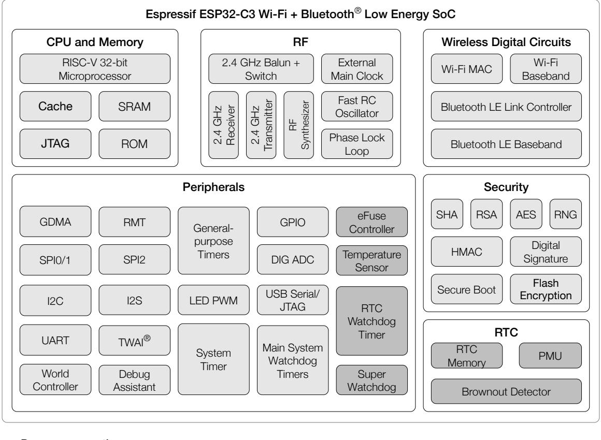
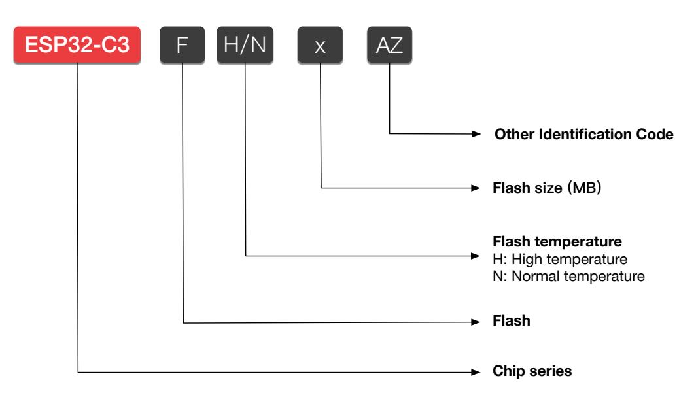
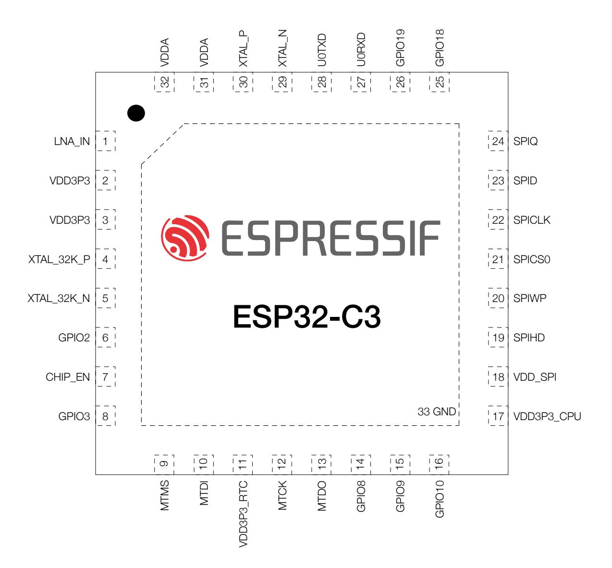
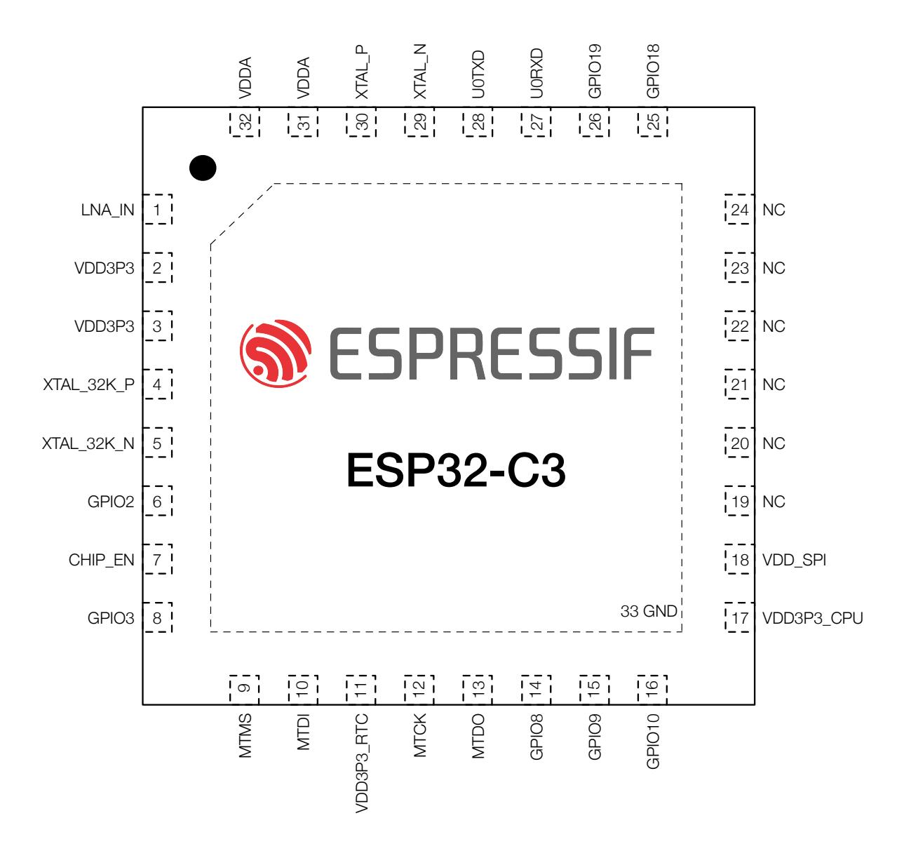
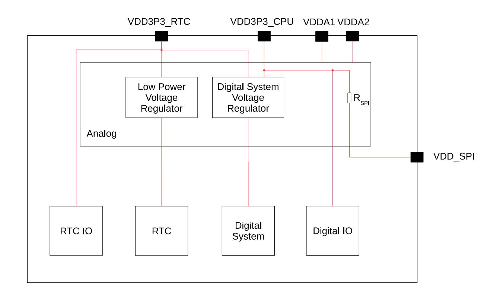
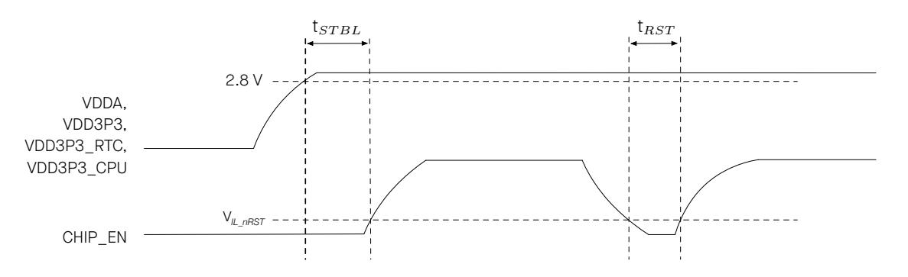
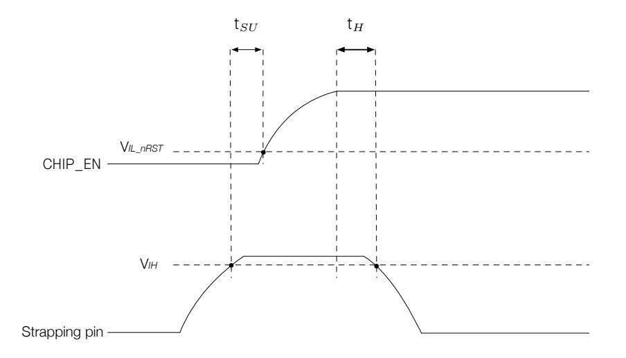
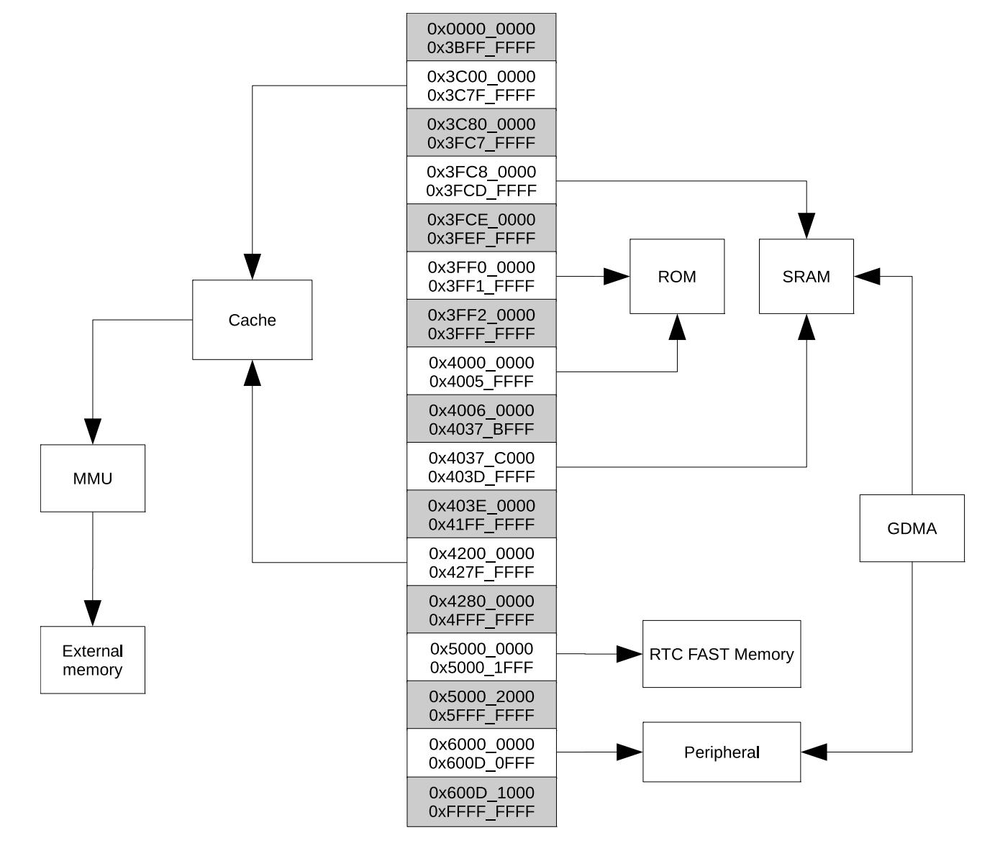
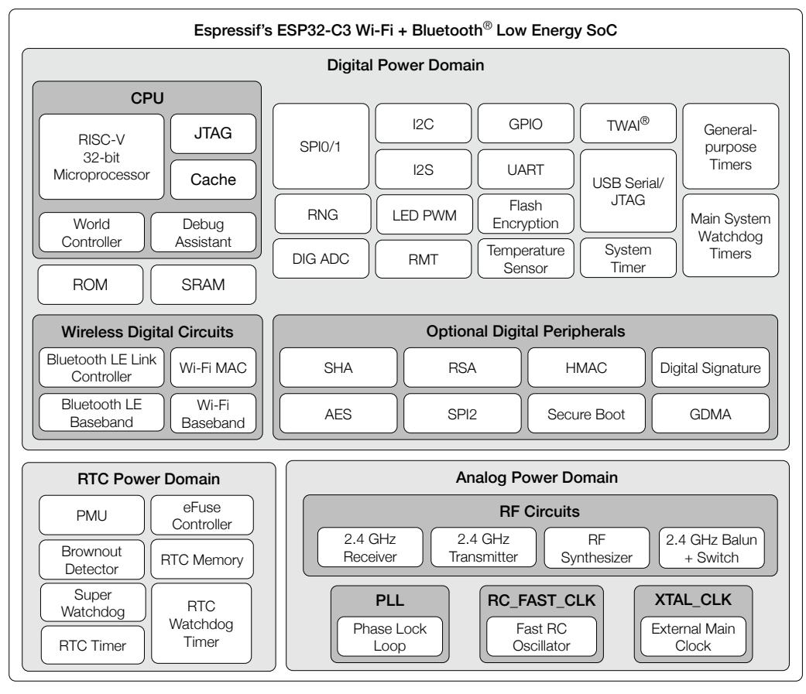
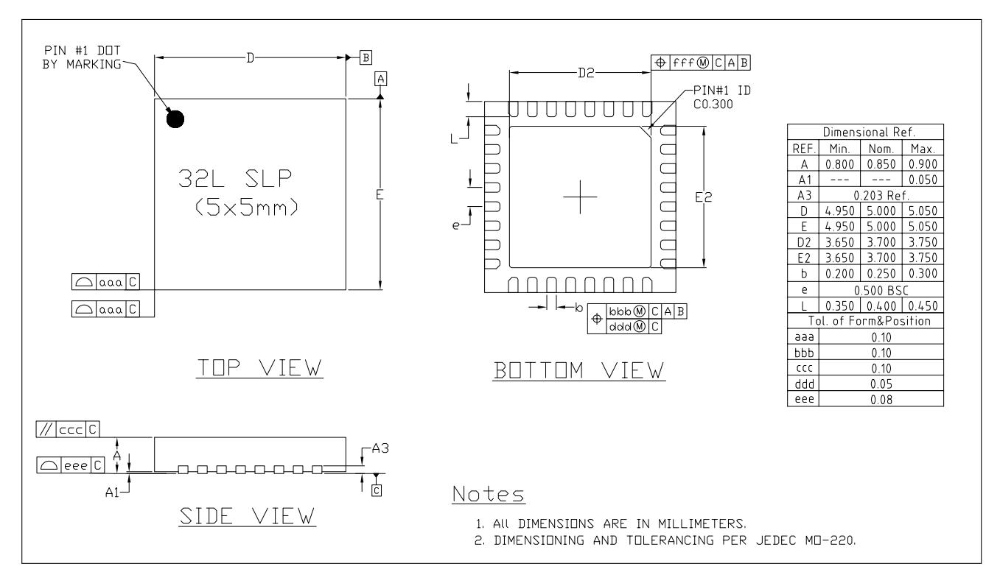

Datasheet Version 2.1
Ultra-Low-Power SoC with RISC-V Single-Core CPU 2.4 GHz Wi-Fi (802.11b/g/n) and Bluetooth® 5 (LE) Optional 4 MB flash in the chip's package QFN32 (5×5 mm) package
Including:
ESP32-C3 ESP32-C3FN4 – End of life ESP32-C3FH4 ESP32-C3FH4AZ – Not Recommended for New Designs (NRND) ESP32-C3FH4X – Recommended
ESP32-C3 is an low-power and highly-integrated MCU-based solution that supports 2.4 GHz Wi-Fi and Bluetooth® Low Energy (Bluetooth LE).
The functional block diagram of the SoC is shown below.

Normal
Low power consumption components capable of working in Deep-sleep mode
For more information on power consumption, see Section 4.1.3.6 Power Management Unit .
The ESP32-C3 chip series is a member of the ESP32-C3 chip series group. For more information about this chip series group, see ESP32-C3 Chip Series Group Overview.
With low power consumption, ESP32-C3 is an ideal choice for IoT devices in the following areas:
Check the link or the QR code to make sure that you use the latest version of this document: https://www.espressif.com/documentation/esp32-c3_datasheet_en.pdf
|
Contents
Product Overview |
|||||
|---|---|---|---|---|---|
| Features | Applications | ||||
| 1 | ESP32-C3 Series Comparison | ||||
|
1.1
1.2 |
Nomenclature
Comparison |
||||
| 2 | Pins | ||||
| 2.1 | Pin Layout | ||||
|
2.2
2.3 |
Pin Overview | ||||
|
IO Pins
2.3.1 |
IO MUX Functions | ||||
| 2.3.2 | Analog Functions | ||||
| 2.3.3 | |||||
|
Restrictions for GPIOs
2.3.4 Peripheral Pin Assignment |
|||||
| 2.4 | Analog Pins | ||||
| 2.5 | Power Supply | ||||
| 2.5.1 | Power Pins | ||||
|
2.5.2
2.5.3 |
Power Scheme
Chip Power-up and Reset |
||||
| 2.6 | Pin Mapping Between Chip and Flash | ||||
| 3 | Boot Configurations | ||||
| 3.1 | Chip Boot Mode Control | ||||
| 3.2 | ROM Messages Printing Control | ||||
| 4 | Functional Description | ||||
| 4.1 | System | ||||
| 4.1.1 | Microprocessor and Master | ||||
| 4.1.1.1 | High-Performance CPU | ||||
| 4.1.1.2 | GDMA Controller | ||||
| 4.1.2 | 4.1.2.1 |
Memory Organization
Internal Memory |
|||
| 4.1.2.2 | Off-package Flash | ||||
| 4.1.2.3 | Cache | ||||
| Contents | ||||
| 4.1.2.4 | eFuse Controller | |||
| 4.1.3 | System Components | |||
| 4.1.3.1 | IO MUX and GPIO Matrix | |||
| 4.1.3.2 | Reset | |||
| 4.1.3.3 | Clock | |||
| 4.1.3.4 | Interrupt Matrix | |||
| 4.1.3.5 | System Timer | |||
| 4.1.3.6 | Power Management Unit | |||
| 4.1.3.7 | Timer Group | |||
| 4.1.3.8 | Watchdog Timers | |||
|
4.1.3.9
4.1.3.10 |
Permission Control
System Registers |
|||
| 4.1.3.11 | Debug Assistant | |||
| 4.1.4 | Cryptography and Security Component | |||
| 4.1.4.1 | AES Accelerator | |||
| 4.1.4.2 | HMAC Accelerator | |||
| 4.1.4.3 | RSA Accelerator | |||
| 4.1.4.4 | SHA Accelerator | |||
| 4.1.4.5 | Digital Signature | |||
| 4.1.4.6 | External Memory Encryption and Decryption | |||
| 4.1.4.7 | Random Number Generator | |||
| 4.2 | Peripherals | |||
| 4.2.1 | Connectivity Interface | |||
| 4.2.1.1 | UART Controller | |||
| 4.2.1.2 | SPI Controller | |||
| 4.2.1.3 | I2C Controller | |||
| 4.2.1.4 | I2S Controller | |||
|
4.2.1.5
4.2.1.6 |
USB Serial/JTAG Controller
Two-wire Automotive Interface |
|||
| 4.2.1.7 | LED PWM Controller | |||
| 4.2.1.8 | Remote Control Peripheral | |||
| 4.2.2 | Analog Signal Processing | |||
| 4.2.2.1 | SAR ADC | |||
| 4.2.2.2 | Temperature Sensor | |||
| 4.3 | Wireless Communication | |||
| 4.3.1 | Radio | |||
| 4.3.1.1 | 2.4 GHz Receiver | |||
| 4.3.1.2 | 2.4 GHz Transmitter | |||
| 4.3.1.3 | Clock Generator | |||
| 4.3.2 | Wi-Fi | |||
| 4.3.2.1 | Wi-Fi Radio and Baseband | |||
| 4.3.2.2 | Wi-Fi MAC | |||
|
4.3.2.3
Networking Features |
||||
| 4.3.3 | Bluetooth LE | |||
| 4.3.3.1 | Bluetooth LE PHY | |||
| Contents | ||
| 5 | Electrical Characteristics | |
| 5.1 | Absolute Maximum Ratings | |
|
5.2
5.3 |
Recommended Operating Conditions
VDD_SPI Output Characteristics |
|
| 5.4 | DC Characteristics (3.3 V, 25 °C) | |
| 5.5 | ADC Characteristics | |
| 5.6 | Current Consumption | |
|
5.6.1
RF Current Consumption in Active Mode |
||
|
5.6.2
Current Consumption in Other Modes |
||
| 5.7 | Reliability | |
| 6 | RF Characteristics | |
| 6.1 |
Wi-Fi Radio
6.1.1 Wi-Fi RF Transmitter (TX) Characteristics |
|
|
6.1.2
Wi-Fi RF Receiver (RX) Characteristics |
||
| 6.2 | Bluetooth 5 (LE) Radio | |
|
6.2.1
Bluetooth LE RF Transmitter (TX) Characteristics 6.2.2 Bluetooth LE RF Receiver (RX) Characteristics |
||
| 7 | Packaging | |
| Appendix A – ESP32-C3 Consolidated Pin Overview | ||
| ESP32-C3 Chip Series Group Overview | ||
| Glossary | ||
| Related Documentation and Resources | ||
| List of Tables | ||
| 1-1 | ESP32-C3 Series Comparison | |
| 2-1 | Pin Overview | |
| 2-2 | Power-Up Glitches on Pins | |
| 2-3 | Peripheral Signals Routed via IO MUX | |
| 2-4 | IO MUX Pin Functions | |
|
2-5
2-6 |
Analog Signals Routed to Analog Functions
Analog Functions |
|
| 2-7 | Peripheral Pin Assignment | |
| 2-8 | Analog Pins | |
| 2-9 | Power Pins | |
| 2-10 Voltage Regulators | ||
| 2-11 | Description of Timing Parameters for Power-up and Reset | |
| 2-12 Pin Mapping Between Chip and In-package Flash | ||
| 3-1 | Default Configuration of Strapping Pins | |
| 3-2 | Description of Timing Parameters for the Strapping Pins | |
| 3-3 | Chip Boot Mode Control | |
| 3-4 | UART0 ROM Message Printing Control | |
| 3-5 | USB Serial/JTAG ROM Message Printing Control | |
| 4-1 | Components and Power Domains | |
| 5-1 | Absolute Maximum Ratings | |
| 5-2 | Recommended Operating Conditions | |
| 5-3 | VDD_SPI Internal and Output Characteristics | |
|
5-4
5-5 |
DC Characteristics (3.3 V, 25 °C)
ADC Characteristics |
|
| 5-6 | ADC Calibration Results | |
| 5-7 | Wi-Fi Current Consumption Depending on RF Modes | |
| 5-8 | Current Consumption in Modem-sleep Mode | |
| 5-9 | Current Consumption in Low-Power Modes | |
| 5-10 Reliability Qualifications | ||
| 6-1 | Wi-Fi Frequency | |
| 6-2 | TX Power with Spectral Mask and EVM Meeting 802.11 Standards | |
| 6-3 | TX EVM Test | |
| 6-4 | RX Sensitivity | |
| 6-5 | Maximum RX Level | |
| 6-6 | RX Adjacent Channel Rejection | |
| 6-7 | Bluetooth LE Frequency | |
| 6-8 | Transmitter Characteristics - Bluetooth LE 1 Mbps | |
| 6-9 | Transmitter Characteristics - Bluetooth LE 2 Mbps | |
| 6-10 Transmitter Characteristics - Bluetooth LE 125 Kbps | ||
| 6-11 | Transmitter Characteristics - Bluetooth LE 500 Kbps | |
|
6-12 Receiver Characteristics - Bluetooth LE 1 Mbps
6-13 Receiver Characteristics - Bluetooth LE 2 Mbps |
||
| ESP32-C3 Series Nomenclature | |
| ESP32-C3、ESP32-C3FH4, and ESP32-C3FN4 Pin Layout (Top View) | |
|
2-2
2-3 2-4 |
List of Figures
ESP32-C3FH4X and ESP32-C3FH4AZ Pin Layout (Top View) ESP32-C3 Power Scheme Visualization of Timing Parameters for Power-up and Reset Visualization of Timing Parameters for the Strapping Pins |

Figure 1-1. ESP32-C3 Series Nomenclature
| Table 1-1. ESP32-C3 Series Comparison | |||||
|---|---|---|---|---|---|
| Ordering Code 1 | In-Package Flash 6 |
Ambient Temp. 2
(°C) |
Package (mm) | GPIO No. 4 | Chip Revision 5 |
| ESP32-C3 3 | — | –40 ∼ 105 | QFN32 (5*5) | 22 | v0.4 |
| ESP32-C3FN4 (End of life) | 4 MB | –40 ∼ 85 | QFN32 (5*5) | 22 | v0.4 |
| ESP32-C3FH4 | 4 MB | –40 ∼ 105 | QFN32 (5*5) | 22 | v0.4 |
| ESP32-C3FH4AZ (NRND) | 4 MB | –40 ∼ 105 | QFN32 (5*5) | 16 | v0.4 |
| ESP32-C3FH4X |
1 For details on chip mar king and packing, see Section 7 Packaging .
2 Ambient temperature specifies the recommended temperature range of the environment immediately outside an Espressif chip.
5 All chip revisions have the same SRAM size, but chip revision v1.1 (i.e. ESP32-C3FH4X) has aro und 10 KB more available space for users than chip revision v0.4. Chip revision v1.1 depends on specific ESP-IDF versions, as detailed in Compatibility Advisory for ESP32-C3 Chip Revision v1.1. For how to identify chip revisions, please refer to ESP32-C3 Series SoC Errata .
6 For information about in-package flash, see also Section 4.1.2.1 Internal Memory . By default, the SPI flash on the chip opera tes at a maximum clock frequency of 80 MHz and does n ot support the auto suspend feature. If you have a r equirement for a higher flash clock frequency of 120 MHz or if you need the flash auto suspend feature, please contact us.

Figure 2-1. ESP32-C3 、 ESP32-C3FH4, and ESP32-C3FN4 Pin Layout (Top View)

Figure 2-2. ESP32-C3FH4X and ESP32-C3FH4AZ Pin Layout (Top View)
The ESP32-C3 chip integrates multiple peripherals that require communication with the outside world. To keep the chip package size reasonably small, the number of available pins has to be limited. So the only way to route all the incoming and outgoing signals is through pin multiplexing. Pin muxing is controlled via software programmable registers (see ESP32-C3 Technical Reference Manual > Chapter IO MUX and GPIO Matrix ).
All in all, the ESP32-C3 chip has the following types of pins:
Predefined functions means that each IO pin has a set of direc t connections to certain sig nals from on-chip peripherals. During run-time, the user can configure which peripheral signal from a predefined set to connect to a certain pin at a certain time via memory mapp ed registers.
Table 2-1 Pin Overview gives an overview of all the pins. For more information, s ee the respectiv e sections for each pin type below, or Appendix A – ESP32-C3 Consolidated Pin Overview.
| Table 2-1. Pin Overview | |||||||
|---|---|---|---|---|---|---|---|
| Pin | Pin | Pin | Pin Providing | Pin Settings 5 | Pin Function Sets 1 | ||
| No. | Name | Type | Power 2-4 | At Reset | After Reset | IO MUX | Analog |
| 1 | LNA_IN | Analog | |||||
|
2
3 |
VDD3P3
VDD3P3 |
Power
Power |
|||||
| 4 | XTAL_32K_P | IO | VDD3P3_RTC | IO MUX | Analog | ||
| 5 | XTAL_32K_N | IO | VDD3P3_RTC | IO MUX | Analog | ||
| 6 | GPIO2 | IO | VDD3P3_RTC | IE | IE | IO MUX | Analog |
| 7 | CHIP_EN | Analog | |||||
| 8 | GPIO3 | IO | VDD3P3_RTC | IE | IE | IO MUX | Analog |
| 9 | MTMS | IO | VDD3P3_RTC | IE | IO MUX | Analog | |
| 10 | MTDI | IO | VDD3P3_RTC | IE | IO MUX | Analog | |
| 11 | VDD3P3_RTC | Power | |||||
| 12 | MTCK | IO | VDD3P3_CPU | IE 6 | IO MUX | ||
| 13 | MTDO | IO | VDD3P3_CPU | IE | IO MUX | ||
| 14 | GPIO8 | IO | VDD3P3_CPU | IE | IE | IO MUX | |
| 15 | GPIO9 | IO | VDD3P3_CPU | IE, WPU | IE, WPU | IO MUX | |
| 16 | GPIO10 | IO | VDD3P3_CPU | IE | IO MUX | ||
| 17 |
VDD3P3_CPU
VDD_SPI 8 |
Power | |||||
|
18
19 |
9
SPIHD |
Power
IO |
VDD3P3_CPU
VDD_SPI / VDD3P3_CPU |
WPU | IE, WPU |
IO MUX
IO MUX |
|
| 20 | SPIWP | IO | VDD_SPI / VDD3P3_CPU | WPU | IE, WPU | IO MUX | |
| Table 2-1 - cont'd from previous page |
|---|
| Table 2-1 – cont'd from previous page | ||||||||
| Pin | Pin | Pin | Pin Providing | Pin Settings 5 | Pin Function Sets 1 | |||
| No. | Name | 9 | Type | Power 2-4 | At Reset | After Reset | IO MUX | Analog |
| 21 | SPICS0 | IO | VDD_SPI / VDD3P3_CPU | WPU | IE, WPU | IO MUX | ||
| 22 | SPICLK | IO | VDD_SPI / VDD3P3_CPU | WPU | IE, WPU | IO MUX | ||
| 23 | SPID | IO | VDD_SPI / VDD3P3_CPU | WPU | IE, WPU | IO MUX | ||
| 24 | SPIQ | IO | VDD_SPI / VDD3P3_CPU | WPU | IE, WPU | IO MUX | ||
| 25 | GPIO18 | IO | VDD3P3_CPU | IO MUX | Analog | |||
| 26 | GPIO19 | IO | VDD3P3_CPU | USB_PU | IO MUX | Analog | ||
| 27 | U0RXD | IO | VDD3P3_CPU | IE, WPU | IO MUX | |||
| 28 | U0TXD | IO | VDD3P3_CPU | WPU 7 | IO MUX | |||
|
29
30 |
XTAL_N
XTAL_P |
Analog
Analog |
||||||
| 31 | VDDA | Power |
1. Bold marks the pin function set in which a pin has its default function in the default boot mode. See Section 3.1 Chip Boot Mode Control .
Table 2-2. Power-Up Glitches on Pins
| Table 2-2. Power-Up Glitches on Pins | ||
| Pin | Glitch 1 | Typical Time Period(ns) |
| MTCK | Low-level glitch | |
|
MTDO
GPIO10 |
Low-level glitch
Low-level glitch |
1 Low-level glitch: the pin is at a low level output status during the time period;
High-level glitch: the pin is at a high level output status during the time period;
Pull-down glitch: the pin is at an internal weak pulled-down status during the time period;
Pull-up glitch: the pin is at an internal weak pulled-up status during the time period.
Please refer to Table 5-4 for detailed parameters about low/high-level and pull-down/up.
The IO MUX allows multiple input/output signals to be connected to a single input/output pin. Each IO pin of ESP32-C3 can be connected to one of the three signals (IO MUX functions, i.e., F0-F2), as listed in Table 2-4 IO MUX Pin Functions .
Among the three sets of signals:
| Table 2-3. Peripheral Signals Routed via IO MUX | ||||
|---|---|---|---|---|
| Description | ||||
| Pin Function | Signal | |||
| U0TXD | Transmit data | |||
| U0RXD | Receive data | UART0 interface | ||
| MTCK | Test clock | |||
| MTDO | Test Data Out | JTAG interface for debugging | ||
| MTDI | Test Data In | |||
| MTMS | Test Mode Select | |||
| SPIQ | Data out | |||
| SPID | Data in | 3.3 V SPI0/1 interface for connection to in-package or off-package flash | ||
| SPIHD | Hold | via the SPI bus. It supports 1-, 2-, 4-line SPI modes. See also Section | ||
|
SPIWP
SPICLK |
Write protect
Clock |
2.6 Pin Mapping Between Chip and Flash | ||
| SPICS… | Chip select | |||
| FSPIQ | Data out | |||
| FSPID | Data in | |||
| FSPIHD | Hold | SPI2 interface for fast SPI connection. It supports 1-, 2-, 4-line SPI | ||
| FSPIWP | Write protect | modes | ||
| FSPICLK | Clock | |||
Table 2-4 IO MUX Pin Functions shows the IO MUX functions of IO pins.
| IO MUX Function 1, 2, 3 | |||||||
|---|---|---|---|---|---|---|---|
|
Pin
No. |
IO MUX /
GPIO Name 2 |
F0 |
Type 3
F1 |
Type | F2 | Type | |
| Table 2-4 – cont'd from previous page | |||||||||
|---|---|---|---|---|---|---|---|---|---|
| Pin | IO MUX / | IO MUX Function 1, 2, 3 | |||||||
| No. | GPIO | F0 | Type 3 | F1 | Type | F2 | Type | ||
| Name 2 | |||||||||
| 5 | GPIO1 | GPIO1 | I/O/T | GPIO1 | I/O/T | ||||
| 6 | GPIO2 | GPIO2 | I/O/T | GPIO2 | I/O/T | FSPIQ | I1/O/T | ||
| 8 | GPIO3 | GPIO3 | I/O/T | GPIO3 | I/O/T | ||||
| 9 | GPIO4 | MTMS | I1 | GPIO4 | I/O/T | FSPIHD | I1/O/T | ||
| 10 | GPIO5 | MTDI | I1 | GPIO5 | I/O/T | FSPIWP | I1/O/T | ||
|
12
13 |
GPIO6
GPIO7 |
MTCK
MTDO |
I1
O/T |
GPIO6
GPIO7 |
I/O/T
I/O/T |
FSPICLK
FSPID |
I1/O/T
I1/O/T |
||
| 14 | GPIO8 | GPIO8 | I/O/T | GPIO8 | I/O/T | ||||
| 15 | GPIO9 | GPIO9 | I/O/T | GPIO9 | I/O/T | ||||
| 16 | GPIO10 | GPIO10 | I/O/T | GPIO10 | I/O/T | FSPICS0 | I1/O/T | ||
| 18 | GPIO11 | GPIO11 | I/O/T | GPIO11 | I/O/T | ||||
| 19 | GPIO12 | SPIHD | I1/O/T | GPIO12 | I/O/T | ||||
| 20 | GPIO13 | SPIWP | I1/O/T | GPIO13 | I/O/T | ||||
| 21 | GPIO14 | SPICS0 | O/T | GPIO14 | I/O/T | ||||
| 22 | GPIO15 | SPICLK | O/T | GPIO15 | I/O/T | ||||
| 23 | GPIO16 | SPID | I1/O/T | GPIO16 | I/O/T | ||||
| 24 | GPIO17 | SPIQ | I1/O/T | GPIO17 | I/O/T | ||||
| 25 | GPIO18 | GPIO18 | I/O/T | GPIO18 | I/O/T | ||||
| 26 | GPIO19 | GPIO19 | I/O/T | GPIO19 | I/O/T | ||||
Table 2-4 – cont'd from previous page
1 Bold marks the default pin functions in the default boot mode. See Section 3.1 Chip Boot Mode Control .
2 Regarding highlighted cells, see Section 2.3.3 Restrictions for GPIOs .
3 Each IO MUX function (F n , n = 0 ~ 2) is associated with a type . The description of type is as follows:
Some IO pins also have analog functions, for analog peripherals (such as ADC) in any power mode. Internal analog signals are routed to these analog functions, see Table 2-5 Analog Signals Routed to Analog Functions .
| Table 2-5. Analog Signals Routed to Analog Functions | ||||||
| Pin Function | Signal | Description | ||||
| ADC…_CH… | ADC1/2 channel … signal | ADC1/2 interface | ||||
|
USB_D-
USB_D+ |
Data -
Data + |
USB Serial/JTAG function | ||||
Table 2-5. Analog Signals Routed t o Analog Functions
Table 2-6 Analog Functions shows the analog functions of IO pins.
| Table 2-6. Analog Functions | |||||||
|---|---|---|---|---|---|---|---|
| Pin | Analog IO | Analog Function 2 | |||||
| No. | Name 1, 2 | F0 | F1 | ||||
| 4 | GPIO0 | XTAL_32K_P | ADC1_CH0 | ||||
| 5 | GPIO1 | XTAL_32K_N | ADC1_CH1 | ||||
| 6 | GPIO2 | ADC1_CH2 | |||||
| 8 | GPIO3 | ADC1_CH3 | |||||
| 9 | GPIO4 | ADC1_CH4 | |||||
| 10 | GPIO5 | ADC2_CH0 | |||||
Table 2-6. Analog Functions
1 Bold marks the default pin functions in the default boot mode. See Section 3.1 Chip Boot Mode Control .
2 Regarding highlighted cells, see Section 2.3.3 Restrictions for GPIOs .
All IO pins of ESP32-C3 have GPIO pin functions. However, the IO pins are multiplexed and can be configured for different purposes based on the requirements. Some IOs have restrictions for usage. It is essential to consider the multiplexed nature and the limitations when using these IO pins.
In tables of this section, the following pin functions are highlighted in red or yellow . They are important pin functions, and the IO pins with these functions should be used with caution as GPIO / GPIO :
Strapping pins are highlighted by pin name, instead of pin functions.
For more information about assigning pins, please see Section 2. 3.4 Peripheral Pin Assignment and Appendix A – ESP32-C3 Consolidated Pin Overview.
Pins that can be assigned to peripherals of the ESP32-C3 chip include:
If a peripheral only support IO MUX, it can only be assigned to fixed pins. Such peripherals are USB Serial/JTAG, JTAG, LP UART, LP I2C, and ADC.
If a peripheral support both IO MUX, and GPIO Matrix, it can use either fixed pins or any GPIO pins according to user needs.
Table 2-7 Peripheral Pin Assignment highlight the pins that can be assigned to each peripheral interfaces accordi ng to priorities:
| Table 2-7. Peripheral Pin Assignment | ||||||||||||||
| UART0 1 SPI0/1 | 1 SPI2 | 1 | ||||||||||||
| Pin No. | Pin Name | USB Serial/JTAG JTAG | ADC1 | ADC2 | UART1 | I2C | I2S | TWAI | LED PWM RMT | |||||
|
1
2 |
LNA_IN
VDD3P3 |
|||||||||||||
| 3 | VDD3P3 | |||||||||||||
| 4 | XTAL_32K_P | ADC1_CH0 | GPIO0 | GPIO0 | GPIO0 | GPIO0 | GPIO0 | GPIO0 | GPIO0 | GPIO0 | GPIO0 | |||
| 5 | XTAL_32K_N | ADC1_CH1 | GPIO1 | GPIO1 | GPIO1 | GPIO1 | GPIO1 | GPIO1 | GPIO1 | GPIO1 | GPIO1 | |||
| 6 | GPIO2 | ADC1_CH2 | GPIO2 | GPIO2 | FSPIQ | GPIO2 | GPIO2 | GPIO2 | GPIO2 | GPIO2 | GPIO2 | |||
| 7 | CHIP_EN | |||||||||||||
| 8 | GPIO3 | ADC1_CH3 | GPIO3 | GPIO3 | GPIO3 | GPIO3 | GPIO3 | GPIO3 | GPIO3 | GPIO3 | GPIO3 | |||
| 9 | MTMS | MTMS ADC1_CH4 | GPIO4 | GPIO4 | FSPIHD | GPIO4 | GPIO4 | GPIO4 | GPIO4 | GPIO4 | GPIO4 | |||
| 10 | MTDI | MTDI | ADC2_CH0 GPIO5 | GPIO5 | FSPIWP | GPIO5 | GPIO5 | GPIO5 | GPIO5 | GPIO5 | GPIO5 | |||
| 11 | VDD3P3_RTC | |||||||||||||
| 12 | MTCK | MTCK | GPIO6 | GPIO6 | FSPICLK GPIO6 | GPIO6 | GPIO6 | GPIO6 | GPIO6 | GPIO6 | ||||
| 13 | MTDO | MTDO | GPIO7 | GPIO7 | FSPID | GPIO7 | GPIO7 | GPIO7 | GPIO7 | GPIO7 | GPIO7 | |||
| 14 | GPIO8 | GPIO8 | GPIO8 | GPIO8 | GPIO8 | GPIO8 | GPIO8 | GPIO8 | GPIO8 | GPIO8 | ||||
| 15 | GPIO9 | GPIO9 | GPIO9 | GPIO9 | GPIO9 | GPIO9 | GPIO9 | GPIO9 | GPIO9 | GPIO9 | ||||
| 16 | GPIO10 | GPIO10 | GPIO10 | FSPICS0 GPIO10 GPIO10 GPIO10 GPIO10 GPIO10 | GPIO10 | |||||||||
| 17 | VDD3P3_CPU | |||||||||||||
|
18
19 |
VDD_SPI
SPIHD |
GPIO11
GPIO12 |
GPIO11
SPIHD |
GPIO11
GPIO12 |
GPIO11
GPIO12 |
GPIO11
GPIO12 |
GPIO11
GPIO12 |
GPIO11
GPIO12 |
GPIO11
GPIO12 |
GPIO11
GPIO12 |
||||
| 20 | SPIWP | GPIO13 | SPIWP | GPIO13 | GPIO13 | GPIO13 | GPIO13 | GPIO13 | GPIO13 | GPIO13 | ||||
| 21 | SPICS0 | GPIO14 | SPICS0 | GPIO14 | GPIO14 | GPIO14 | GPIO14 | GPIO14 | GPIO14 | GPIO14 | ||||
| 22 | SPICLK | GPIO15 | SPICLK | GPIO15 | GPIO15 | GPIO15 | GPIO15 | GPIO15 | GPIO15 | GPIO15 | ||||
| 23 | SPID | GPIO16 | SPID | GPIO16 | GPIO16 | GPIO16 | GPIO16 | GPIO16 | GPIO16 | GPIO16 | ||||
| 24 | SPIQ | GPIO17 | SPIQ | GPIO17 | GPIO17 | GPIO17 | GPIO17 | GPIO17 | GPIO17 | GPIO17 | ||||
| 25 | GPIO18 | USB_D- | GPIO18 | GPIO18 | GPIO18 | GPIO18 | GPIO18 | GPIO18 | GPIO18 | GPIO18 | GPIO18 | |||
| 26 | GPIO19 | USB_D+ | GPIO19 | GPIO19 | GPIO19 | GPIO19 | GPIO19 | GPIO19 | GPIO19 | GPIO19 | GPIO19 | |||
| 27 | U0RXD | U0RXD | GPIO20 | GPIO20 | GPIO20 GPIO20 GPIO20 GPIO20 GPIO20 | GPIO20 | ||||||||
| 28 | U0TXD | U0TXD | GPIO21 | GPIO21 | GPIO21 | GPIO21 | GPIO21 | GPIO21 | GPIO21 | GPIO21 | ||||
| 29 | XTAL_N | |||||||||||||
| 30 | XTAL_P |
For UART0, SPI0/1, and SPI2 interface, the signals routed to fixed pins via IO MUX can also be routed to any GPIO pins via GPIO Matrix.
| Table 2-8. Analog Pins | |||
|---|---|---|---|
|
Pin Pin
Pin |
Pin | ||
| No. Name | Type Function | ||
| 1 | LNA_IN | I/O | Low Noise Amplifier (RF LNA) input / output signals |
| 7 | CHIP_EN | I | High: on, enables the chip (powered up). |
| Low: off, disables the chip (powered down). | |||
Table 2-8. Analog Pins
The chip is powered via the power pins described in Table 2-9 Power Pins .
| The chip is powered via the power pins described in Table 2-9 Power Pins. | ||||
|---|---|---|---|---|
| Table 2-9. Power Pins | ||||
| Pin Pin | Power Supply 1,2 | |||
| No. Name | Direction Power Domain / Other | IO Pins 3 | ||
| 2 | VDD3P3 | Input | Analog power domain | |
| 3 | VDD3P3 | Input | Analog power domain | |
| 11 | VDD3P3_RTC | Input | RTC and part of Digital power domains RTC IO | |
| 17 | VDD3P3_CPU Input | Input |
Digital power domain
In-package flash (backup power line) |
Digital IO |
| 18 | VDD_SPI 4 | Output | In-package and off-package flash | SPI IO |
| Table 2-9. Power Pins | ||
|---|---|---|
1 See in conjunction with Section 2.5.2 Power Scheme .
2 For recommended and maximum voltage and current, see Section 5.1 Absolute Maximum Ratings and Section 5.2 Recommended Operating Conditions .
3 Digital IO pins are those powered by VDD3P3_CPU, and RTC IO p ins are those powered by VDD3P 3_RTC and so on, as shown in Figure 2-3 ESP32- C3 Po wer Scheme . See also Table 2-1 Pin Overview > Column Pin Providing Power .
4 To configure VDD_SPI as input or outp ut, see ESP32-C3 Technica l Reference M anua l > Chapter Low-power Management .
The power scheme is shown in Figure 2-3 ESP32-C3 Power Scheme .
The components on the chip are powered via voltage regulators.
| Voltage Regulator Output Power Supply | ||
|
Digital
1.1 V |
Digital power domain | |

Once the power is supplied to the chip, its power rails need a short time to stabilize. After that, CHIP_EN – the pin used for power-up and reset – is pulled high to activate the chip. For information on CHIP_EN as well as power-up and reset timing, see Figure 2-4 and Table 2-11.

| Table 2-11. Description of Timing Parameters for Power-up and Reset | |||||
| Parameter Description | |||||
|
Time
reserved for the power rails of VDDA, VDD3P3, |
|||||
| tST BL | VDD3P3_RTC, and VDD3P3_CPU to stabilize before the CHIP_EN | ||||
Table 2-11. Description of Timing Parameters for Power-up and Reset
Table 2-12 lists the pin mapping between the chip and flash for all SPI modes.
For chip variants with in-package flash (see Table 1-1 ESP32-C3 Series Comparison ), the pins allocated for communication with in-package flash can be identified depending on the SPI mode used.
For o ff-pac kage flash, these are the recommended pin mappings.
For more information on SPI controllers, see also Sec tion 4.2.1.2 SPI Controller .
It is not recommended to use the pins connected to flash for any other purposes.
| Table 2-12. Pin Mapping Between Chip and In-package Flash | ||||
|---|---|---|---|---|
| Pin | Pin | Single SPI Dual SPI Quad SPI / QPI | ||
| No. | Name | Flash | Flash | Flash |
| 22 | SPICLK | CLK | CLK | CLK |
| 21 | SPICS0 1 | CS# | CS# | CS# |
| 23 | SPID | DI | DI | DI |
| 24 | SPIQ | DO | DO | DO |
1 CS0 is for in-package flash
The chip allows for configuring the following boot parameters through strapping pins and eFuse parameters at power-up or a hardware reset, without microcontroller interaction.
The default values of all the above eFuse bits are 0, which means that they are not burnt. Given that eFuse is one-time programmable, once an eFuse bit is programmed to 1, it can never be reverted to 0. For how to program eFuse bits, please refer to ESP32-C3 Technical Reference Manual > Chapter eFuse Controller .
The default values of the strapping pins, namely the logic levels, are determined by pins' internal weak pull-up/pull-down resistors at reset if the pins are not connected to any circuit, or connected to an external high-impedance circuit.
| Table 3-1. Default Configuration of Strapping Pins | ||
|---|---|---|
| Strapping Pin Default Configuration Bit Value | ||
| GPIO2 | Floating | – |
To change the bit values, the strapping pins should be connected to external pull-down/pull-up resistances. If the ESP32-C3 is used as a device by a host MCU, the strapping pin voltage levels can also be controlled by the host MCU.
All strapping pins have latches. At system reset, the latches sample the bit values of their respective strapping pins and store them until the chip is powered down or shut down. The states of latches cannot be changed in any other way. It makes the strapping pin values available during the entire chip operation, and the pins are freed up to be used as regular IO pins after reset.
The timing of signals connected to the strapping pins should adhere to the setup time and hold time specifications in Table 3-2 and Figure 3-1.
| Table 3-2. Description of Timing Parameters for the Strapping Pins | ||
|---|---|---|
| tSU | Parameter Description | Min (ms) |
| Setup time is the time reserved for the power rails to stabilize be | ||
| tH | fore the CHIP_EN pin is pulled high to activate the chip. | |
| Hold time is the time reserved for the chip to read the strapping | ||
| pin values after CHIP_EN is already high and before these pins | ||

Figure 3-1. Visualization of Timing Parameters for the Strapping Pins
GPIO2, GPIO8, and GPIO9 control the boot mode after the reset is released. See Table 3-3 Chip Boot Mode Control .
| Table 3-3. Chip Boot Mode Control | |||
|---|---|---|---|
| Boot Mode | GPIO2 2 | GPIO8 | GPIO9 |
Table 3-3. Chip Boot Mode Control
1 Bold marks the default value and configuration.
In SPI Boot mode, the ROM bootloader loads and executes the program from SPI flash to boot the system.
In Joint Download Boot mode, users can download binary files into flash using UART0 or USB interface. It is also possible to download binary files into SRAM and execute it from SRAM.
In addition to SPI Boot and Joint Download Boot modes, ESP32-C3 also supports SPI Download Boot mode. For details, please see ESP32-C3 Technical Reference Manual > Chapter Chip Boot Control .
During the boot proce ss, the messages by the ROM code can be printed to:
• (Default) UART0 and USB Serial/JTAG controller
EFUSE_UART_PRINT_CONTROL and GPIO8 control ROM messages printing to UART0 as shown in Table 3-4 UART0 ROM Message Printing Control .
| Table 3-4. UART0 ROM Message Printing Control | ||
| UART0 ROM Code Printing EFUSE_UART_PRINT_CONTROL | GPIO8 | |
| 0 | Ignored | |
| Enabled | 1 | 0 |
| 2 | 1 |
Table 3-4. UART0 ROM Message Printing Control
1 Bold marks the default value and configuration.
EFUSE_USB_PRINT_CHANNEL controls the printing to USB Serial/JTAG controller as shown in Table 3-5 USB Serial/JTAG ROM Message Printing Control .
| Table 3-5. USB Serial/JTAG ROM Message Printing Control | ||
|---|---|---|
| Table 3-5. USB Serial/JTAG ROM Message Printing Control | ||
|---|---|---|
| USB Serial/JTAG | EFUSE_DIS_USB_SERIAL_JTAG 2 EFUSE_USB_PRINT_CHANNEL | |
|
ROM Code Printing
Enabled |
||
| 0 | 0 |
1 Bold marks the default value and configuration.
2 EFUSE_DIS_USB_SERIAL_JTAG controls whether to disable USB Serial/JTAG.
This section describes the core of the chip's operation, covering its microprocessor, memory organization, system components, and security features.
This subsection describes the core processing units within the chip and their capabilities.
ESP32-C3 has a low-power 32-bit RISC-V single-core microprocessor with the following features:
For details, see ESP32-C3 Technical Reference Manual > Chapter High-Performance CPU .
ESP32-C3 has a general DMA controller (GDMA) with si x independent channels, i.e. three transmit channels and three receive channels. These six channels are shared by peripherals with DMA feature. The GDMA controller implements a fixed-priority scheme among these channels, whose priority can be configured.
The GDMA controller controls data transfer using linked lists. It allows peripheral-to-memory and memory-to-memory data transfer at a high speed. All channels can access internal RAM.
Peripherals on ESP32-C3 with DMA feature are SPI2, UHCI0, I2S, AES, SHA, and ADC.
For details, see ESP32-C3 Technical Reference Manual > Chapter GDMA Controller (DMA) .
This subsectio n describes the memory arrangement to explain how data is stored, accessed, and managed for efficient operation.
Figure 4-1 illustrates the address mapping structure of ESP32-C3.

Figure 4-1. Address Mapping Structure
The memory space with gray background is not available for use.
ESP32-C3's internal memory includes:
For details, see ESP32-C3 Technical Reference Manual > Chapter System and Memory .
ESP32-C3 sup ports SPI, Dual SPI, Quad SPI, and QPI in terfaces that allow connection to multiple off-package flash, i.e. flash outside the chip's pacakge.
CPU's instruction memory space and read-only data memory space can map into the off-package flash of ESP32-C3, whose size can be 16 MB at most. ESP32-C3 supports hardware encryption/decryption based on XTS-AES to protect developers' programs and data in flash.
Through high-speed caches, ESP32-C3 can support at a time up to:
Note:
After ESP32-C3 is initialized, software can customize the mapping of off-package flash into the CPU address space.
For details, see ESP32-C3 Technical Reference Manual > Chapter System and Memory .
ESP32-C3 has an eight-way set associative cache. This cache is read-only and has the following features:
For details, see ESP32-C3 Technical Reference Manual > Chapter System and Memory .
The eFuse me mory is a one-time programmable memor y that stores parameters and user data, and the eFuse controller of ESP32-C3 is used to program and read this eFuse memory.
For details, see ESP32-C3 Technical Reference Manual > Chapter eFuse Controller .
This subsectio n describes the essential components th at contribute to the overall functionality and control of the system.
ESP32-C3 has 22 or 16 GPIO pins which can be assigned various functions by configuring corresponding registers. Besides digital signals, some GPIOs can be also used for analog functions, such as ADC.
All GPIOs have selectable internal pull-up or pull-down, or can be set to high impedance. When these GPIOs are configured as an input, the input value can be read by software through the register. Input GPIOs can also be set to generate edge-triggered or level-triggered CPU interrupts. All digital IO pins are bi-directional, non-inverting and tristate, including input and output buffers with tristate control. These pins can be multiplexed with other functions, such as the UART, SPI, etc. For low-power operations, the GPIOs can be set to holding state.
The IO MUX and the GPIO matrix are used to route signals from peripherals to GPIO pins. Together they provide highly configurable I/O. Using GPIO Matrix, peripheral input signals can be configured from any IO pins while peripheral output signals can be configured to any IO pins.
For details, see ESP32-C3 Technical Reference Manual > Chapter IO MUX and GPIO Matrix .
The ESP32-C3 chip provides four types of reset that oc cur at different levels, namely CPU Reset, Core Reset, System Reset, and Chip Reset. Except for Chip Reset, all reset types preserve the data stored in internal memory.
For details, see ESP32-C3 Technical Reference Manual > Chapter Reset and Clock .
For details, see ESP32-C3 Technical Reference Manual > Chapter Reset and Clock .
The CPU clock has three possible sources:
The application can select the clock source from the three clocks above. The selected clock source drives the CPU clock directly, or after division, depending on the application. Once the CPU is reset, the default clock source would be the external main crystal clock divided by 2.
ESP32-C3 is unable to operate without an external main crystal clock.
The RTC slow clock is used for RTC counter, RTC watchdog and low-power controller. It has three possible sources:
The RTC fast clock is used for RTC peripherals and sensor controllers. It has two possible sources:
The Interrupt Matrix in the ESP32-C3 chip independently routes peripheral interrupt sources to the ESP-RISC-V CPU's peripheral interrupts, to timely inform CPU to process the coming interrupts.
Espressif Systems 36
• Configure priority, type, threshold, and enable signal of CPU interrupts
For details, see ESP32-C3 Technical Reference Manual > Chapter Interrupt Matrix .
ESP32-C3 inte grates a 52-bit system timer, which has tw o 52-bit counters and three comparators. The system timer has the following features:
For details, see ESP32-C3 Technical Reference Manual > Chapter System Timer .
The ESP32-C3 has an advanced Power Management U nit (PMU). It can be flexibly configured to power up different power domains of the chip to achieve the best balance between chip performance, power consumption, and wakeup latency.
Configuring the PMU is a complex procedure. To simplify power management for typical scenarios, there are the following predefined power modes that power up different combinations of power domains:
For power consumption in different power modes, see Section 5.6 Current Consumption .
Figure 4-2 Components and Power Domains and the following Table 4-1 show the distribution of chip components between power domains and power subdomains .

Power distribution
Power domain Power subdomain
Figure 4-2. Components and Power Domains
| Table 4-1. Components and Power Domains | ||||||||
|---|---|---|---|---|---|---|---|---|
| Power | RTC | Digital | Analog | |||||
| Domain | Optional | Wireless | ||||||
| CPU | Digital | Digital | FOSC_ | XTAL_ |
RF
PLL |
|||
| Power | Periph | Circuits | CLK | CLK | ||||
|
Mode
Active |
ON | ON | ON | ON | ON |
ON
ON |
ON |
ON
ON |
| Modem-sleep | ON | ON | ON | ON | ON1 |
ON
ON |
ON |
OFF2
ON |
| Light-sleep | ON | ON | OFF1 | ON1 | OFF1 |
ON
OFF |
OFF |
OFF2
OFF |
Table 4-1. Components and Power Domains
1 Configurable, see the TRM.
2 If Wireless Digital Circuits are on, RF circuits are periodically switched on when required by internal operation to keep active wireless connections running.
For details, see ESP32-C3 Technical Reference Manual > Chapter Low-Power Management (RTC_CNTL) .
ESP32-C3 has two 54-bit general-purpose timers, which are based on 16-bit prescalers and 54-bit auto-reload-capable up/down-timers.
The timers' features are summarized as follows:
For details, see ESP32-C3 Technical Reference Manual > Chapter Timer Group (TIMG) .
For details, see ESP32-C3 Technical Reference Manual > Chapter Watchdog Timers .
ESP32-C3 cont ains three digital watchdog timers: one i n each of the two timer groups (called Main System Watchdog Timers, or MWDT) and one in the RTC module (called the RTC Watchdog Timer, or RWDT).
During the flash boot process, RWDT and the MWDT in timer group 0 (TIMG0) are enabled automatically in order to detect and recover from booting errors.
Digital watchdog timers have the following features:
If the boot process from an SPI flash does not complete within a predetermined period of time, the watchdog will reboot the entire main system.
ESP32-C3 also has one analog watchdog timer: RTC super watchdog timer (SWD). It is an ultra-low-power circuit in analog domain that helps to prevent the system from operating in a sub-optimal state and resets the system if required.
SWD has the following features:
• Ultra-low power
Espressif Systems 39
ESP32-C3 includes a Permission Controller (PMS), which allocates the hardware resources (memory and peripherals) to two isolated environments, thereby realizing the separation of privileged and unprivileged environments.
For details, see ESP32-C3 Technical Reference Manual > Chapter Permission Control (PMS) .
The System Re gisters in the ESP32-C3 chip are used to configure various auxiliary chip features.
For details, see ESP32-C3 Technical Reference Manual > Chapter System Registers (HP_SYSREG) .
The Debug Assistant provides a set of functions to help locate bugs and issues during software debugging. It offers various monitoring capabilities and logging features to assist in identifying and resolving software errors efficiently.
For details, see ESP32-C3 Technical Reference Manual > Chapter Debug Assistant (ASSIST_DEBUG) .
This subsectio n describes the security features incorpo rated into the chip, which safeguard data and operations.
ESP32-C3 integrates an Advanced Encryption Standard (AES) accelerator, which is a hardware device that speeds up computation using AES algorithm significantly, compared to AES algorithms implemented solely in software. The AES accelerator integrated in ESP32-C3 has two working modes, which are Typical AES and DMA-AES.
Espressif Systems 41
For details, see ESP32-C3 Technical Reference Manual > Chapter AES Accelerator (AES).
The HMAC Acc elerator (HMAC) module is designed to c ompute Message Authentication Codes (MACs) using the SHA-256 Hash algorithm and keys as described in RFC 2104. It provides hardware support for HMAC computations, significantly reducing software complexity and improving performance.
For details, see the ESP32-C3 Technical Reference Manual > Chapter HMAC Accelerator .
The RSA accelerato r provides hardware support for high-pre cision computation used in various RSA asymmetric cipher algorithms, significantly improving their run time and reducing their software complexity. Compared with RSA algorithms implemented solely in software, this hardware accelerator can speed up RSA algorithms significantly.
For details, see the ESP32-C3 Technical Reference Manual > Chapter RSA Accelerator .
The SHA Accelerato r (SHA) is a hardware device that speed s up SHA algorithm significantly, compared to SHA algorithm implemented solely in software. The SHA accelerator integrated in ESP32-C3 has two working modes, which are Typical SHA and DMA-SHA.
For more details, see the ESP32-C3 Technical Reference Manual > Chapter SHA Accelerator (SHA) .
The Digital Signature (DS) module in the ESP32-C3 chip generate s message signatures based on RSA with hardware acceleration.
For more details, see the ESP32-C3 Technical Reference Manual > Chapter Digital Signature (DS) .
The External Memory Enc ryption and Decryption (XTS_AES) mod ule in the ESP32-C3 chip provides security for users' application code and data stored in the external memory (flash).
For more details, see the ESP32-C3 Technical Reference Manual > Chapter External Memory Encryption and Decryption (XTS_AES) .
The Random Number Generator (RNG) in the ESP32-C3 is a true random number generator that generates 32-bit random numbers for cryptographic operations from a physical process.
For more details about the Random Number Generator, refer to the ESP32-C3 Technical Reference Manual > Chapter Random Number Generator (RNG) .
This section describes the chip's peripheral capabilities, covering connectivity interfaces and on-chip sensors that extend its functionality.
This subsection describes the connectivity interfaces on the chip that enable communication and interaction with external devices and networks.
ESP32-C3 has two UART interfaces, i.e. UART0 and UART1, which support IrDA and asynchronous communication (RS232 and RS485) at a speed of up to 5 Mbps. The UART controller provides hardware flow control (CTS and RTS signals) and software flow control (XON and XOFF). Both UART interfaces connect to GDMA via UHCI0, and can be accessed by the GDMA controller or directly by the CPU.
For details, see ESP32-C3 Technical Reference Manual > Chapter UART Controller (UART, LP_UART) .
The pins conne cted to transmit and receive signals (U0 TXD and U0RXD) for UART0 are multiplexed with GPIO21 ~ GPIO20 via IO MUX. Other signals can be routed to any GPIOs via the GPIO matrix.
For more information about the pin assignment, see Section 2.3 IO Pins and ESP32-C3 Technical Reference Manual > Chapter IO MUX and GPIO Matrix .
ESP32-C3 has the following SPI interfac es:
For details, see ESP32-C3 Technical Reference Manual > Chapter SPI Controller (SPI) .
For SPI0/1, the pins are multiplexed with GPIO12 ~ GPIO 17 via the IO MUX.
For SPI2, the pins are multiplexed with GPIO2, GPIO4 ~ GPIO7, GPIO10, and JTAG interface via the IO MUX.
For more information about the pin assignment, see Section 2.3 IO Pins and ESP32-C3 Technical Reference Manual > Chapter IO MUX and GPIO Matrix .
ESP32-C3 has an I2C bus interface whic h is used for I2C master mode or slave mode, depending on your configuration. The I2C interface supports:
For details, see ESP32-C3 Technical Reference Manual > Chapter I2C Controller (I2C) .
The pins for I2 C can be chosen from any GPIOs via the GPIO Matrix.
For more information about the pin assignment, see Section 2.3 IO Pins and ESP32-C3 Technical Reference Manual > Chapter IO MUX and GPIO Matrix .
ESP32-C3 includes a standard I2S interface. This interface can operate as a master or a slave in full-duplex mode or half-duplex mode, and can be configured for 8-bit, 16-bit, 24-bit, or 32-bit serial communication. BCK clock frequency, from 10 kHz up to 40 MHz, is supported.
The I2S interface connects to the GDMA controller. The interface supports TDM PCM, TDM MSB alignment, TDM standard, and PDM standard.
For details, see ESP32-C3 Technical Reference Manual > Chapter I2S Controller (I2S) .
The pins for th e I2S Controller can be chosen from any GPIOs via the GPIO Matrix.
For more information about the pin assignment, see Section 2.3 IO Pins and ESP32-C3 Technical Reference Manual > Chapter IO MUX and GPIO Matrix .
ESP32-C3 integrates a USB Serial/JTAG controller. This controller has the following features:
For details, see ESP32-C3 Technical Reference Manual > Chapter USB Serial/JTAG Controller (USB_SERIAL_JTAG) .
The pins for the USB Serial/JTAG Controller are multiplexed with GPIO18 ~ GPIO19.
For more information about the pin assignment, see Section 2.3 IO Pins and ESP32-C3 Technical Reference Manual > Chapter IO MUX and GPIO Matrix .
ESP32-C3 has a TWAI ® controller with the following features:
For details, see ESP32-C3 Technical Reference Manual > Chapter Two-wire Automotive Interface .
The pins for th e Two-wire Automotive Interface can be c hosen from any GPIOs via the GPIO Matrix.
For more information about the pin assignment, see Section 2.3 IO Pins and ESP32-C3 Technical Reference Manual > Chapter IO MUX and GPIO Matrix .
The LED PWM controller can generate in dependent digital waveform on six channels. The LED PWM controller:
For details, see ESP32-C3 Technical Reference Manual > Chapter LED PWM Controller .
The pins for th e LED PWM Controller can be chosen fro m any GPIOs via the GPIO Matrix.
For more information about the pin assignment, see Section 2.3 IO Pins and ESP32-C3 Technical Reference Manual > Chapter IO MUX and GPIO Matrix .
The Remote Control Peripheral (RMT) su pports two channels of infrared remote transmission and two channels of infrared remote reception. By controlling pulse waveform through software, it supports various infrared and other single wire protocols. All four channels share a 192 × 32-bit memory block to store transmit or receive waveform.
For more details, see ESP32-C3 Technical Reference Manual > Chapter Remote Control Peripheral (RMT) .
The pins for the Remote Control Peripheral can be chosen from any GPIOs via the GPIO Matrix.
For more information about the pin assignment, see Section 2.3 IO Pins and ESP32-C3 Technical Reference Manual > Chapter IO MUX and GPIO Matrix .
This subsection describes components on the chip that sense and process real-world data.
ESP32-C3 integrates two 12-bit SAR ADCs.
ADC2 of some chip revisions is not operable. For details, please refer to ESP32-C3 Series SoC Errata.
For ADC characteristics, please refer to Section 5.5 ADC Characteristics .
For more details, see ESP32-C3 Technical Reference Manual > Chapter On-Chip Sensors and Analog Signal Processing .
The pins for the SAR ADC are multiplexed with GPIO0 ~ GPIO5, JTAG interface, SPI2 interface, and pins for external crystal or oscillator.
For more information about the pin assignment, see Section 2.3 IO Pins and ESP32-C3 Technical Reference Manual > Chapter IO MUX and GPIO Matrix .
The temperature sensor generates a vo ltage that varies with temperature. The voltage is internally converted via an ADC into a digital value.
The temperature sensor has a range of –40 °C to 125 °C. It is designed primarily to sense the temperature changes inside the chip. The temperature value depends on factors like microcontroller clock frequency or I/O load. Generally, the chip's internal temperature is higher than the operating ambient temperature.
For more details, see ESP32-C3 Technical Reference Manual > Chapter On-Chip Sensors and Analog Signal Processing .
This section describes the chip's wireless communication capabilities, spanning radio technology, Wi-Fi, Bluetooth, and 802.15.4.
This subsection describes the fundamental radio technology embedded in the chip that facilitates wireless communication and data exchange. ESP32-C3 radio consists of the following blocks:
The 2.4 GHz receiver demodulates the 2.4 GHz RF signal to quadrature baseband signals and converts them to the digital domain with two high-resolution, high-speed ADCs. To adapt to varying signal channel conditions, ESP32-C3 integrates RF filters, Automatic Gain Control (AGC), DC offset cancelation circuits, and baseband filters.
The 2.4 GHz transmitter modulates the quadrature baseband signals to the 2.4 GHz RF signal, and drives the antenna with a high-powered CMOS power amplifier. The use of digital calibration further improves the linearity of the power amplifier.
Additional calibrations are integrated to cancel any radio imperfections, such as:
These built-in calibration routines reduce the cost, time, and specialized equipment required for product testing.
The clock generator produces quadrature clock signals of 2.4 GHz for both the receiver and the transmitter. All components of the clock generator are integrated into the chip, including inductors, varactors, filters, regulators and dividers.
The clock generator has built-in calibration and self-test circuits. Quadrature clock phases and phase noise are optimized on chip with patented calibration algorithms which ensure the best performance of the receiver and the transmitter.
This subsection describes the chip's Wi-Fi capabilities, which facilitate wireless communication at a high data rate.
ESP32-C3 Wi-Fi radio and baseband support the following features:
ESP32-C3 supports antenna diversity with an external RF switch. This switch is controlled by one or more GPIOs, and used to select the best antenna to minimize the effects of channel imperfections.
ESP32-C3 implements the full 802.11 b/g/n Wi-Fi MAC protocol. It supports the Basic Service Set (BSS) STA and SoftAP operations under the Distributed Control Function (DCF). Power management is handled automatically with minimal host interaction to minimize the active duty period.
ESP32-C3 Wi-Fi MAC applies the following low-level protocol functions automatically:
Espressif provides libraries for TCP/IP networking, ESP-WIFI-MESH networking, and other networking protocols over Wi-Fi. TLS 1.0, 1.1 and 1.2 is also supported.
This subsection describes the chip's Bluetooth capabilities, which facilitate wireless communication for low-power, short-range applications. ESP32-C3 includes a Bluetooth Low Energy subsystem that integrates a hardware link layer controller, an RF/modem block and a feature-rich software protocol stack. It supports the core features of Bluetooth 5 and Bluetooth mesh.
Bluetooth Low Energy radio and PHY in ESP32-C3 support:
Bluetooth Low Energy Link Layer Controller in ESP32-C3 supports:
Stresses above those listed in Table 5-1 Absolute Maximum Ratings may cause permanent damage to the device. These are stress ratings only and normal operation of the device at these or any other conditions beyond those indicated in Section 5.2 Recommended Operating Conditions is not implied. Exposure to absolute-maximum-rated conditions for extended periods may affec t device reliability.
| Table 5-1. Absolute Maximum Ratings | ||||
| Parameter | Description | Min | Max | Unit |
1 For more information on input power pins, see Section 2.5 Power Supply .
2 The product proved to be fully functional after all its IO pins were pulled high while being connected to ground for 24 c onsecutive hours a t ambient temperature of 25 °C.
For recommended ambient temperature, see Section 1 ESP32-C3 Series Comparison .
| Table 5-2. Recommended Operating Conditions |
|---|
| Table 5-2. Recommended Operating Conditions | |||||
|---|---|---|---|---|---|
| Parameter 1 | |||||
| Description | Min | Typ | Max | Unit | |
| VDD3P3_CPU 2, 3 |
VDDA, VDD3P3, VDD3P3_RTC Recommended input voltage
Recommended input voltage |
3.0
3.0 |
3.3
3.3 |
3.6
V 3.6 V |
|
| VDD_SPI (as input) | — | 3.0 | 3.3 |
3.6
V |
1 See in conjunction with Section 2.5 Power Supply .
2 If writing to eFuses, the voltage on VDD3P3_CPU should not exceed 3.3 V as the circuits responsible for burning eFuses are sensitive to higher voltages.
3 If VDD3P3_CPU is used to po wer VDD_SPI (see Section 2.5.2 Power Scheme ), the voltage drop on R SP I should be accounted for. See also Section 5.3 VDD_SPI Output Characteristics .
| Table 5-3. VDD_SPI Internal and Output Characteristics | ||
1 See in conjunction with Section 2.5.2 Power Scheme .
2 VDD3P3_CPU must be more than VDD_flash_min + I_flash_max *
RSP I ;
where
• VDD_flash_min – minimum operating voltage of flash_CPU
• I_flash_max – maximum operating current of flash_CPU
| Table 5-4. DC Characteristics (3.3 V, 25 °C) | |||||
|---|---|---|---|---|---|
| Parameter Description | Min | Typ | Max | Unit | |
| CIN | Pin capacitance | — | 2 |
—
pF |
|
| VIH | High-level input voltage | 0.75 × VDD 1 |
VDD 1 + 0.3
— |
V | |
| VIL | Low-level input voltage | –0.3 | — 0.25 × VDD 1 | V | |
| IIH | High-level input current | — | — |
50
nA |
|
| IIL | Low-level input current | — | — |
50
nA |
|
|
2
VOH 2 VOL |
High-level output voltage | 0.8 × VDD 1 | — |
—
0.1 × VDD 1 — |
—
V V |
|
Low-level output voltage
High-level source current (VDD 1 = 3.3 V, |
|||||
| IOH | — | 40 |
—
mA |
||
|
VOH
>= 2.64 V, PAD_DRIVER = 3) Low-level sink current (VDD 1 = 3.3 V, VOL = |
|||||
| IOL | 0.495 V, PAD_DRIVER = 3) | — | 28 |
—
mA |
|
| RP U | Internal weak pull-up resistor | — | 45 |
—
kΩ |
|
| RPD | Internal weak pull-down resistor | — | 45 |
—
kΩ |
|
| Chip reset release voltage CHIP_EN voltage | |||||
| VIH_nRST | is within the specified range) | 0.75 × VDD 1 |
VDD 1 + 0.3
— |
V | |
| Chip reset voltage (CHIP_EN voltage is within |
1 VDD – voltage from a power pin of a respective power domain.
2 V OH and V OL are measured using high-impedance load.
| Table 5-5. ADC Characteristics | ||||
| Symbol | Parameter |
Min
Max |
Unit | |
| DNL (Differential nonlinearity) 1 | ADC connected to an external | –7 |
7
LSB |
|
| 100 nF capacitor; DC signal input; | ||||
1 To get better DNL results, you can sample multiple times and apply a filter, or calculate the average value.
2 kSPS means kilo samples-per-second.
The calibrated ADC results after hardware calibration and software calibration are shown in Table 5-6. For higher accuracy, you may implement your own calibration methods.
| Table 5-6. ADC Calibration Results | ||||
|---|---|---|---|---|
| Parameter | Description |
Min
Max |
Unit | |
| ATTEN0, effective measurement range of 0 ~ 750 | –10 |
10
mV |
||
| ATTEN1, effective measurement range of 0 ~ 1050 | –10 |
10
mV |
||
Table 5-6. ADC Cal ibration Results
The current consumption measurements are taken with a 3.3 V supply at 25 °C of ambient temperature at the RF port. All transmitters' measurements are based on a 100% duty cycle.
| Work Mode 1 | Description | Peak (mA) | ||
| 802.11b, 1 Mbps, @21 dBm | 335 | |||
| 802.11g, 54 Mbps, @19 dBm | 285 | |||
| TX | 802.11n, HT20, MCS7, @18.5 dBm | 276 | ||
| Active (RF working) | 802.11n, HT40, MCS7, @18.5 dBm | 278 | ||
| 802.11b/g/n, HT20 | 84 | |||
| Current Consumption in Other Modes | |||||
|---|---|---|---|---|---|
| Table 5-8. Current Consumption in Modem-sleep Mode | |||||
| Mode | CPU Frequency | Typ | |||
| Description | All Peripherals Clocks | All Peripherals Clocks | |||
| (MHz) | Disabled (mA) | Enabled (mA) 1 | |||
| CPU is running |
23
28 |
||||
1 In practice, the current consumption might be different depending on which peripherals are enabled.
2 In Modem-sleep mode, Wi-Fi is clock gated.
3 In Modem-sleep mode, the consumption might be higher when accessing flash. For a flash rated at 80 Mbit/s, in SPI 2-line mode the consumption is 10 mA.
| Table 5-9. Current Consumption in Low-Power Modes | ||
|---|---|---|
| Mode | Description | Typ (µA) |
| Light-sleep | VDD_SPI and Wi-Fi are powered down, and all GPIOs are high-impedance | 130 |
| Table 5-10. Reliability Qualifications | |||
|---|---|---|---|
| Test Item | Test Conditions | Test Standard | |
| HTOL (High Temperature | |||
| Operating Life) | 125 °C, 1000 hours | JESD22-A108 | |
| ESD (Electro-Static | HBM (Human Body Mode) 1 ± 2000 V | JS-001 | |
| Discharge Sensitivity) | CDM (Charge Device Mode) 2 ± 1000 V | JS-002 | |
| Current trigger ± 200 mA | |||
| Latch up | Voltage trigger 1.5 × VDDmax | JESD78 | |
| Bake 24 hours @125 °C | |||
| Preconditioning | Moisture soak (level 3: 192 hours @30 °C, 60% RH) |
J-STD-020, JESD47,
JESD22-A113 |
|
| IR reflow solder: 260 + 0 °C, 20 seconds, three times | |||
| TCT (Temperature Cycling | –65 °C / 150 °C, 500 cycles | JESD22-A104 | |
| Test) | |||
| uHAST (Highly | |||
| Accelerated Stress Test, | 130 °C, 85% RH, 96 hours | JESD22-A118 | |
|
unbiased)
HTSL (High Temperature |
JESD22-A103 | ||
| Storage Life) | 150 °C, 1000 hours | ||
| Table 5-10 - cont'd from previous page |
|---|
|
5
Electrical Characteristics |
||
|---|---|---|
| Table 5-10 – cont'd from previous page |
1 JEDEC document JEP155 states that 500 V HBM allows safe manufacturing with a standard ESD control process.
2 JEDEC document JEP157 states that 250 V CDM allows safe manufacturing with a standard ESD control process.
This section contains tables with RF characteristics of the Espressif product.
The RF data is measured at the antenna port, where RF cable is connected, including the front-end loss. The front-end circuit is a 0 Ω resistor.
Devices should operate in the center frequency range allocated by regional regulatory authorities. The target center frequency range and the target transmit power are configurable by software. See ESP RF Test Tool and Test Guide for instructions.
Unless otherwise stated, the RF tests are conducted with a 3.3 V (±5%) supply at 25 ºC ambient temperature.
| Table 6-1. Wi-Fi Frequency |
|---|
| Table 6-1. Wi-Fi Frequency | |||
|---|---|---|---|
| Min | Typ | Max |
Table 6-2. TX Power with Spectral Mask and EVM Meeting 802.11 Standards
| Table 6-2. TX Power with Spectral Mask and EVM Meeting 802.11 Standards | |||
|---|---|---|---|
| Min | Typ | Max | |
| Rate | (dBm) (dBm) (dBm) | ||
| 802.11b, 1 Mbps |
—
21.0 |
||
|
802.11b, 11 Mbps
802.11g, 6 Mbps |
—
21.0 — 21.0 |
||
| 802.11g, 54 Mbps |
—
19.0 |
||
| 802.11n, HT20, MCS0 |
—
20.0 |
||
| 802.11n, HT20, MCS7 |
—
18.5 |
||
| 802.11n, HT40, MCS0 |
—
20.0 |
| Min | Typ | SL1 | |
|---|---|---|---|
| Rate | (dB) | (dB) | (dB) |
| 802.11b, 1 Mbps, @21 dBm |
–24.5
— |
–10 | |
| 802.11b, 11 Mbps, @21 dBm |
–25.0
— |
–10 | |
| 802.11g, 6 Mbps, @21 dBm |
–23.0
— |
–5 | |
| 802.11g, 54 Mbps, @19 dBm |
–27.5
— |
–25 | |
| 802.11n, HT20, MCS0, @20 dBm |
–22.5
— –29.0 |
–5
–27 |
|
|
802.11n, HT20, MCS7, @18.5 dBm
802.11n, HT40, MCS0, @20 dBm |
—
–22.5 — |
–5 |
| . | |||
|---|---|---|---|
| Rate |
Min
(dB) |
(dB) |
(dB) |
| 802.11n, HT40, MCS7, @18.5 dBm | |||
1 SL stands for standard limit value.
| Table 6-4. RX Sensitivity | |||
|---|---|---|---|
| Min | Typ | Max | |
|
Rate
802.11b, 1 Mbps |
–98.4
— |
(dBm) (dBm) (dBm)
— |
|
| 802.11b, 2 Mbps |
–96.0
— |
— | |
| 802.11b, 5.5 Mbps |
–93.0
— |
— | |
| 802.11b, 11 Mbps |
–88.6
— |
— | |
| 802.11g, 6 Mbps |
–93.8
— |
— | |
| 802.11g, 9 Mbps |
–92.2
— |
— | |
| 802.11g, 12 Mbps |
–91.0
— |
— | |
| 802.11g, 18 Mbps |
–88.4
— |
— | |
| 802.11g, 24 Mbps |
—
–85.8 |
— | |
| 802.11g, 36 Mbps |
–82.0
— |
— | |
| 802.11g, 48 Mbps |
–78.0
— |
— | |
| 802.11g, 54 Mbps |
–76.6
— |
— | |
| 802.11n, HT20, MCS0 |
–93.6
— |
— | |
| 802.11n, HT20, MCS1 |
–90.8
— |
— | |
| 802.11n, HT20, MCS2 |
–88.4
— |
— | |
| 802.11n, HT20, MCS3 |
–85.0
— |
— | |
|
802.11n, HT20, MCS4
802.11n, HT20, MCS5 |
–81.8
— –77.8 — |
—
— |
|
| 802.11n, HT20, MCS6 |
–76.0
— |
— | |
| 802.11n, HT20, MCS7 |
–74.8
— |
— | |
| 802.11n, HT40, MCS0 |
–90.0
— |
— | |
| 802.11n, HT40, MCS1 |
–88.0
— |
— | |
| 802.11n, HT40, MCS2 |
–85.2
— |
— | |
| 802.11n, HT40, MCS3 |
—
–82.0 |
— | |
| 802.11n, HT40, MCS4 |
–78.8
— |
— | |
| 802.11n, HT40, MCS5 |
–74.6
— |
— | |
| 802.11n, HT40, MCS6 |
–73.0
— |
— |
| Max | |
|---|---|
|
5
5 |
|
| 5 | |
|
Min
Typ (dBm) (dBm) (dBm) — — — |
| Table 6-5 – cont'd from previous page | |||||
| Min | Typ | Max | |||
| Rate | (dBm) (dBm) (dBm) | ||||
| 802.11g, 54 Mbps | — | 0 | |||
| 802.11n, HT20, MCS0 | — | 5 | |||
Table 6-6. RX Adjacent Channel Rejection
| Table 6-6. RX Adjacent Channel Rejection | |||
|---|---|---|---|
| Min | Typ | Max | |
|
Rate
802.11b, 1 Mbps |
(dB) |
(dB)
— |
(dB)
35 |
| 802.11b, 11 Mbps | — | 35 | |
| 802.11g, 6 Mbps | — | 31 | |
| 802.11g, 54 Mbps | — | 20 | |
| 802.11n, HT20, MCS0 | — | 31 | |
| 802.11n, HT20, MCS7 | — | 16 |
| Table 6-7. Bluetooth LE Frequency | |||
|---|---|---|---|
| Min | Typ | Max |
| Parameter | Description | Min | Typ | Max | Unit |
| RF power control range | –24.00 |
0
20.00 |
dBm | ||
|
RF transmit power
Carrier frequency offset and drift |
Gain control step |
—
3.00 |
—
dB |
||
|
Max |fn|n=0,
1, 2, k |
—
17.00 |
—
kHz |
|||
|
Max |f0
− fn| |
— | 1.75 |
—
kHz |
||
|
Max |fn
− fn−5| |
— | 1.46 |
—
kHz |
||
| Modulation characteristics |
|f1
− f0| |
—
0.80 |
—
kHz |
||
| ∆ f1avg |
—
250.00 — 190.00 |
—
kHz — kHz |
|||
|
∆
f2max Min (for at least |
|||||
| 99.9% of all ∆ f2max) | |||||
| In-band spurious emissions |
∆ f2avg/∆ f1avg
± 2 MHz offset |
—
0.83 –37.62 — |
—
— — dBm |
||
| ± 3 MHz offset |
–41.95
— |
—
dBm |
| . | |||||
|---|---|---|---|---|---|
| Parameter | Description | Min | Typ | Max | Unit |
| ± 3 MHz offset | _ | -44.48. | dBm |
| Table 6-9. Transmitter Characteristics - Bluetooth LE 2 Mbps | |||||
|
Parameter
RF transmit power |
Description | Min | Typ | Max | Unit |
| RF power control range | –24.00 |
0
20.00 |
dBm | ||
| Gain control step |
—
3.00 |
—
dB |
|||
|
Max |fn|n=0,
1, 2, k |
—
20.80 |
—
kHz |
|||
| Carrier frequency offset and drift |
Max |f0
− fn| |
—
1.30 |
—
kHz |
||
|
Max |fn
− fn−5| |
—
1.33 — 0.70 — 498.00 |
—
kHz |
|||
|
|f1
− f0| ∆ f1avg |
—
kHz — kHz |
||||
|
Min
∆ f2max (for at least |
|||||
| Modulation characteristics | 99.9% of all ∆ f2max) |
—
430.00 |
—
kHz |
||
| ∆ f2avg/∆ f1avg |
—
0.93 |
—
— |
|||
| ± 4 MHz offset |
—
–43.55 |
—
dBm |
| Table 6-10. Transmitter Characteristics - Bluetooth LE 125 Kbps | |||||
|---|---|---|---|---|---|
| Parameter | |||||
| Description | Min | Typ | Max | Unit | |
|
RF transmit power
Carrier frequency offset and drift |
RF power control range | –24.00 |
0
20.00 |
dBm | |
| Gain control step |
—
3.00 |
—
dB |
|||
|
Max |fn|n=0,
1, 2, k |
—
17.50 |
—
kHz |
|||
|
Max |f0
− fn| |
—
0.45 |
—
kHz |
|||
| Modulation characteristics |
|fn
− fn−3| |
—
0.70 — 0.30 |
—
kHz — kHz |
||
|
|f0
− f3| ∆ f1avg |
—
250.00 |
—
kHz |
|||
|
∆
f1max Min (for at least |
|||||
| In-band spurious emissions | 99.9% of all∆ f2max) |
—
235.00 |
—
kHz |
||
| ± 2 MHz offset |
–37.90
— |
—
dBm |
|||
| ± 3 MHz offset |
–41.00
— |
—
dBm |
|
Parameter
RF transmit power |
Description | Min | Typ | Max | Unit |
| RF power control range | –24.00 |
0
20.00 |
dBm | ||
| Carrier frequency offset and drift | Gain control step |
—
3.00 |
—
dB |
||
|
Max |fn|n=0,
1, 2, k |
—
17.00 |
—
kHz |
|||
|
Max |f0
− fn| |
—
0.88 |
—
kHz |
|||
|
|fn
− fn−3| |
—
1.00 |
—
kHz |
|||
|
|f0
− f3| |
—
0.20 |
—
kHz |
Modulation characteristics
| Table 6-11 – cont'd from previous page | ||||||
| Parameter | Description | Min | Typ | Max | Unit | |
|
∆
f2max Min (for at least |
||||||
| 99.9% of all ∆ f2max) |
—
190.00 |
—
kHz |
||||
| Table 6-12. Receiver Characteristics - Bluetooth LE 1 Mbps | |||||
|
Parameter
Sensitivity @30.8% PER |
Description
— |
Min |
Typ
— |
Max
–97 |
Unit
— dBm |
| Maximum received signal @30.8% PER — | — | 5 |
—
dBm |
||
| Co-channel C/I | — | — | 8 |
—
dB |
|
| F = F0 + 1 MHz | — | –3 |
—
dB |
||
| Adjacent channel selectivity C/I | F = F0 – 1 MHz | — | –4 |
—
dB |
|
| F = F0 + 2 MHz | — | –29 |
—
dB |
||
| F = F0 – 2 MHz | — | –31 |
—
dB |
||
| F = F0 + 3 MHz | — | –33 |
—
dB |
||
| F = F0 – 3 MHz | — | –27 |
—
dB |
||
| F ≥ F0 + 4 MHz | — | –29 |
—
dB |
||
| Image frequency | F ≤ F0 – 4 MHz | — | –38 |
—
dB |
|
| — | — | –29 |
—
dB |
||
|
Adjacent channel to image frequency
Out-of-band blocking performance |
F = Fimage
+ 1 MHz |
— | –41 |
—
dB |
|
|
F = Fimage
– 1 MHz |
— | –33 |
—
dB |
||
| 30 MHz ~ 2000 MHz | — | –5 |
—
dBm |
||
| 2003 MHz ~ 2399 MHz | — | –18 |
—
dBm |
||
| 2484 MHz ~ 2997 MHz | — | –15 |
—
dBm |
| Parameter | Description | Min | Typ | Max | Unit |
| Sensitivity @30.8% PER | — | — | –93 |
—
dBm |
|
| Maximum received signal @30.8% PER — | — | 3 |
—
dBm |
||
|
Co-channel C/I
Adjacent channel selectivity C/I |
— | — | 10 |
—
dB |
|
| F = F0 + 2 MHz | — | –7 |
—
dB |
||
| F = F0 – 2 MHz | — | –7 |
—
dB |
||
| F = F0 + 4 MHz | — | –28 |
—
dB |
||
| F = F0 – 4 MHz | — | –26 |
—
dB |
||
| F = F0 + 6 MHz | — | –26 |
—
dB |
||
| F = F0 – 6 MHz | — | –27 |
—
dB |
||
| F ≥ F0 + 8 MHz |
—
— |
–29
–28 |
—
dB — dB |
||
| Image frequency |
F ≤ F0 – 8 MHz
— |
— | –28 |
—
dB |
| Table 6-13 – cont'd from previous page | ||||||
|
Parameter
Adjacent channel to image frequency |
Description | Min | Typ | Max | Unit | |
|
F = Fimage
+ 2 MHz |
— | –26 |
—
dB |
|||
|
F = Fimage
– 2 MHz |
— | –7 |
—
dB |
|||
| 30 MHz ~ 2000 MHz | — | –5 |
—
dBm |
|||
| 2003 MHz ~ 2399 MHz | — | –19 |
—
dBm |
|||
| Table 6-14. Receiver Characteristics - Bluetooth LE 125 Kbps | |||||
|
Parameter
Sensitivity @30.8% PER |
Description
— |
Min |
Typ
–105 — |
Max |
Unit
— dBm |
| Maximum received signal @30.8% PER — | — | 5 |
—
dBm |
||
| Co-channel C/I | — | — | 3 |
—
dB |
|
| F = F0 + 1 MHz | — | –6 |
—
dB |
||
| F = F0 – 1 MHz | — | –6 |
—
dB |
||
| F = F0 + 2 MHz | — | –33 |
—
dB |
||
| F = F0 – 2 MHz | — | –43 |
—
dB |
||
| Adjacent channel selectivity C/I | F = F0 + 3 MHz | — | –37 |
—
dB |
|
| F = F0 – 3 MHz | — | –47 |
—
dB |
||
| F ≥ F0 + 4 MHz | — | –40 |
—
dB |
||
| F ≤ F0 – 4 MHz | — | –50 |
—
dB |
||
| Image frequency | — | — | –40 |
—
dB |
| Table 6-15. Receiver Characteristics - Bluetooth LE 500 Kbps | |||||
| Parameter | Description | Min | Typ | Max | Unit |
| Sensitivity @30.8% PER | — |
–100
— |
—
dBm |
||
| Maximum received signal @30.8% PER — | — | 5 |
—
dBm |
||
| Co-channel C/I | — | — | 3 |
—
dB |
|
| F = F0 + 1 MHz | — | –2 |
—
dB |
||
| F = F0 – 1 MHz | — | –3 |
—
dB |
||
| F = F0 + 2 MHz | — | –32 |
—
dB |
||
| Adjacent channel selectivity C/I | F = F0 – 2 MHz | — | –33 |
—
dB |
|
| F = F0 + 3 MHz | — | –23 |
—
dB |
||
| F = F0 – 3 MHz | — | –40 |
—
dB |
||
| F ≥ F0 + 4 MHz | — | –34 |
—
dB |
||
| F ≤ F0 – 4 MHz | — | –44 |
—
dB |

Figure 7-1. QFN32 (5×5 mm) Package
| P |
P
P |
Pro
i d v |
P
Se ing tt |
An
log Fu t a nc |
I
M U |
Fu
t nc |
|||||||
|---|---|---|---|---|---|---|---|---|---|---|---|---|---|
|
in
No |
in
Na |
in
P Ty Po p |
in
ing At we r |
in
Re A fte t se |
s
Re 0 t se |
ion
1 |
Ty
p |
O
X 1 |
ion
Ty 2 p |
Ty
p |
Appendix | ||
| 1 |
me
L N A_ I N |
e
An a |
r | 0 | e | e | e |
A
– |
|||||
| 2 |
V
D D 3 P 3 |
log
Po we |
|||||||||||
| 3 |
3
3 V D D P |
r
Po we |
|||||||||||
| 4 |
3
2 X T A L_ K_ P |
r
O I V |
3
3_ D D P R T |
X
T A |
3
2 C L_ K_ A D 1_ |
C
G O H P I |
/
O / I |
G
O P I |
/
O / I |
||||
| 5 |
X
T A L_ 3 2 K_ N |
I
O V |
C
D D 3 P 3_ R T |
X
T A |
P
L_ 3 2 K_ N A D C 1_ |
0
0 C H G P I O |
T
I / O / |
0
G P I O |
T
I / O / |
ESP32-C3 | |||
| 6 |
G
P I O 2 |
I
O V |
C
D D 3 P 3_ R T I |
I |
A
D C 1_ |
1
1 C H G P I O |
T
I / O / |
1
G P I O |
T
I / O / F |
S
P I Q |
I
1 / O / |
||
| 7 |
C
H I P_ E N |
An |
C
E |
E |
2
2 |
T | 2 | T | T | Consolidated | |||
| 8 |
G
P I O 3 |
log
a I O V |
D
D 3 P R T I |
I |
A
D C |
C
H G P I O |
/
/ I O |
G
P I O |
/
/ I O |
||||
|
S
M T M |
O
I V |
3_
C E 3 D D P R T |
E
I |
1_
C A D |
3
3 C H M T M |
T
I |
3
G O P I |
T
/ O / I F |
S
P I H |
/
O / I 1 |
|||
| 9 | O |
3_
C 3 |
E |
1_
C |
S
4 C |
1 |
4
G O |
T
/ O / |
D
S |
T
/ O / |
|||
|
1
0 |
M
T D I |
I
V |
3_
C D D P R T |
I
E |
2_
A D |
0
H M T D I |
I
1 |
P
I 5 |
I
T F |
P
I W P |
I
1 T |
||
|
1
1 |
V
D D 3 P 3_ R T C |
Po
we r |
Pin | ||||||||||
|
1
2 |
M
T C K |
I
O V |
D
D 3 P 3_ C P U |
I
E |
M
T C K |
I
1 |
G
P I O 6 |
I
/ O / T F |
S
P I C L K |
I
1 / O / T |
Overview | ||
|
3
1 |
M
T D O |
I
O V |
D
D 3 P 3_ C P U |
I
E |
M
T D O |
/
O T |
G
P I O 7 |
/
/ I O T F |
S
P I D |
/
/ I 1 O T |
|||
|
1
4 |
G
P I O 8 |
I
O V |
D
D 3 P 3_ C P U I E |
I
E |
G
P I O 8 |
/
/ I O T |
G
P I O 8 |
/
/ I O T |
|||||
|
1
5 |
G
O 9 P I |
O
I V |
3
3_ C D D P P U I E, |
W
P U I E, W |
P
U |
G
O 9 P I |
/
O / I T |
G
O 9 P I |
/
O / I T |
||||
|
1
6 |
G
O 0 P I 1 |
O
I V |
3
3_ C D D P P U |
I
E |
G
O 0 P I 1 |
/
O / I T |
G
O 0 P I 1 |
/
O / I T F |
S
C S 0 P I |
/
O / I 1 T |
|||
|
1
7 |
V
D D 3 P 3_ C P U |
Po
we r |
|||||||||||
|
1
8 |
V
D D_ S P I |
Po
V we r |
D
D 3 P 3_ C P U |
G
P I O 1 1 |
I
/ O / T |
G
P I O 1 1 |
I
/ O / T |
||||||
|
9
1 |
S
P I H D |
I
O V |
/
D D_ S P I V D D 3 P 3_ C P U W P |
U
I E, W |
P
U |
S
P I H D |
/
/ I 1 O T |
G
P I O 1 2 |
/
/ I O T |
||||
|
2
0 |
S
P I W P |
I
O V |
/
D D_ S P I V D D 3 P 3_ C P U W P |
U
I E, W |
P
U |
S
P I W P |
/
/ I 1 O T |
G
P I O 1 3 |
/
/ I O T |
||||
|
2
1 |
S
P I C S 0 |
I
O V |
/
D D_ S P I V D D 3 P 3_ C P U W P |
U
I E, W |
P
U |
S
P I C S |
/
0 O T |
G
P I O 1 4 |
/
/ I O T |
||||
|
2
2 |
S
C P I L K |
O
I V |
S
/ 3 3_ C D D_ P I V D D P P U W P |
U
I E, W |
P
U |
S
C P I L |
O
/ K T |
G
O P I 1 5 |
/
O / I T |
||||
|
2
3 |
S
P I D |
O
I V |
S
/ 3 3_ C D D_ P I V D D P P U W P |
U
I E, W |
P
U |
S
P I D |
/
O / I 1 T |
G
O 6 P I 1 |
/
O / I T |
||||
|
2
4 |
S
P I Q |
I
O V |
D
D_ S P I / V D D 3 P 3_ C P U W P |
U
I E, W |
P
U |
S
P I Q |
I
1 / O / T |
G
P I O 1 7 |
I
/ O / T |
||||
|
2
5 |
G
P I O 1 8 |
I
O V |
D
D 3 P 3_ C P U |
U
S B_ |
D- |
G
P I O 1 8 |
I
/ O / T |
G
P I O 1 8 |
I
/ O / T |
||||
|
2
6 |
G
P I O 1 9 |
I
O V |
D
D 3 P 3_ C P U |
U
S B_ |
D+ |
G
P I O 1 9 |
/
/ I O T |
G
P I O 1 9 |
/
/ I O T |
||||
|
2
7 |
U
0 R X D |
I
O V |
D
D 3 P 3_ C P U |
I
E, W |
P
U |
U
0 R X D |
I
1 |
G
P I O 2 0 |
/
/ I O T |
||||
|
2
8 |
0
U T X D |
O
I V |
3
3_ C D D P P U |
W
P U |
0
U T X D |
O |
G
O 2 P I 1 |
/
O / I T |
|||||
|
2
9 |
X
T A L_ N |
log
An a |
|||||||||||
|
3
0 |
X
T A L_ P |
An
log a |
|||||||||||
|
3
1 |
V
D D A |
Po
we r |
|||||||||||
|
3
2 |
V
D D A |
Po
we r |
|||||||||||
*For details, see Section 2 Pins . Regarding highlighted cells, see Section 2.3.3 Restrictions for GPIOs .
The ESP32-C3 chip series group is a low-power solution that provides 2.4 GHz Wi-Fi (802.11b/g/n) and Bluetooth 5.0 connectivity, dedicated to smart home applications. This chip series group consists of the following chip series:
All members within the ESP32-C3 chip series group use a common set of software and reference materials, including the technical reference manual and hardware design guidelines – See Related Documentation and Resources .
| ESP32-C3 | ESP8685 | |
|---|---|---|
| Chip revision | v0.4/v1.1 | v0.4 |
| In-package flash | No/4 MB | 4 MB |
| Flash extensibility | Y | — |
A subset of chips within a chip series group with similar core features and specifications 2, 67
A broad group of related chip products that use the same die. For example, ESP32-C3 c hi p se ries group consists of ESP32-C3 chip series and ESP8685 chip series 2, 67
Flash integrated directly into the chip's package, and extern al t o th e chip die 4, 34
Flash external to the chip's package 4
A hardware component or subsyste m within the chip to interface with the outside world 15, 18
A type of GPIO pin used to configure certain operational settings during the chip's powe r-u p, a nd can be reconfigured as normal GPIO after the chip's reset 29
A parameter stored in an electrically programmabl e fu se (eFuse) memory within a chip. The parameter can be set by programming EFUSE_PGM_DATA n _REG registers, and read by reading a register field named after the parameter 29
A boot mode in which user s lo ad and execute the existing code from SPI flash 30
A boot mode in which users can download code into flash via the UART or othe r in terfaces (see Table 3-3 Chip Boot Mode Control > Note), and load and execute the downloaded code from the flash or SRAM 30
A one-time programmabl e (OTP) memory which stores system and user parameters, such as MAC address, chip revision number, flash encryption key, etc. Value 0 indicates the default state, and valu e 1 indicates the eFuse has been programmed 34
• See the tabs Sales Questions , Technical Enquiries , Circuit Schematic & PCB Design Review , Get Samples (Online stores), Become Our Supplier , Comments & Suggestions . https://espressif.com/en/contact-us/sales-questions
|
Revision History
Date |
Version |
Release notes
• Updated CPU CoreMark® scode in Section Product Overview • According to updates in Compatibility Advisory for ESP32-C3 Chip |
| 2025-04-14 | v2.1 |
Revision v1.1, updated SRAM space in note 5 for Table ESP32-C3 Series
Comparison • Added Section 2.3.4 Peripheral Pin Assignment |
| 2024-11-14 | v2.0 |
• Added ESP32-C3 Chip Series Group Overview
• Added Glossary |
|
2024-09-11
2024-07-29 |
v1.9
v1.8 |
Updated pin layout and the number of GPIOs for ESP32-C3FH4X according to
PCN20240702 Upgrade of ESP32-C3FH4X Product • Removed the ESP32-C3FH4XAZ variant and added Compatibility Advisory for ESP32-C3 Chip Revision v1.1 in Chapter 1 ESP32-C3 Series Comparison • Updated the default driving strength for each pin in Table 2-1 Pin Overview > Note 4 • Added flash erase cycles, retention time, maximum clock frequency in Section 4.1.2.1 Internal Memory • Improved the formatting, structure, and wording in the following sections: – Section 2 Pins – Section 3 Boot Configurations (used to be named as "Strapping Pins") – Section 4 Functional Description • Other minor updates |
| 2024-04-01 | v1.7 |
• Marked the ESP32-C3FN4 variant as end of life
• Marked the ESP32-C3FH4AZ variant as NRND • Marked the ESP32-C3FH4X variant as recommended |
| 2024-01-19 | v1.6 |
• Added the new ESP32-C3FH4X and ESP32-C3FH4XAZ variants in Chap
ter 1 ESP32-C3 Series Comparison • Corrected the PWM duty resolution to 14 bits in Section 4.2.1.7 LED PWM Controller |
| Revision History | ||
|---|---|---|
|
Date
2023-08-11 |
Version
v1.5 |
Cont'd from previous page
Release notes • Marked ESP32-C3FN4 as NRND • Improved the content in the following sections: – Section Product Overview – Section 2 Pins – Section 4.1.3.6 Power Management Unit – Section 4.2.1.2 SPI Controller – Section 5.1 Absolute Maximum Ratings – Section 5.2 Recommended Operating Conditions – Section 5.3 VDD_SPI Output Characteristics – Section 5.5 ADC Characteristics • Added Appendix A • Updated the maximum value of "RF power control range" to 20 dBm in Section 6.2 Bluetooth 5 (LE) Radio |
| 2022-12-15 | v1.4 |
• Other minor updates
• Deleted feature "Antenna diversity" from Section 4.3.3.1 Bluetooth LE PHY • Deleted feature "Supports external power amplifier" • Updated the glitch type of GPIO18 to high-level glitch in Table Power-Up |
| 2022-11-15 | v1.3 |
Glitches on Pins
• Updated notes for Table Power-Up Glitches on Pins • Added links to the Technical Reference Manual and Peripheral Pin Con figurations in Chapter 4 Functional Description • Added a note about ADC2 error in Section 4.2.2.1 SAR ADC • Updated Section 4.1.3.8 Watchdog Timers • Added Table ADC Calibration Results • Updated Section 5.6.2 Current Consumption in Other Modes • Updated RF transmit power in Section 6.2 Bluetooth 5 (LE) Radio • Updated the typo in Section 7 Packaging • Updated Chapter Related Documentation and Resources |
| 2022-04-13 | v1.2 |
• Added a new chip variant ESP32-C3FH4AZ;
• Updated Figure ESP32-C3 Functional Block Diagram; • Added the wake up source for Deep-sleep mode in Section 4.1.3.6 Power Management Unit. |
| Revision History | ||
|---|---|---|
|
Date
2021-10-26 |
Version
v1.1 |
Cont'd from previous page
Release notes • Updated Figure ESP32-C3 Functional Block Diagram to show power modes; • Added CoreMark score in Features; • Updated Table Pin Description to show default pin functions; • Updated Figure ESP32-C3 Power Scheme and related descriptions; • Added Table SPI Signals; |
| 2021-05-28 | v1.0 |
• Added note 3 to Table Recommended Operating Conditions;
• Other updates to wording. • Updated power modes; • Updated Section 3 Boot Configurations; • Updated some clock names and their frequencies in Section 4.1.3.3 Clock; • Added clarification about ADC1 and ADC2 in Section 4.2.2.1 SAR ADC; • Updated the default configuration of U0RXD and U0TXD after reset in Table IO MUX; • Updated sampling rate in Table ADC Characteristics; • Updated Table Reliability Qualifications; |
| • Added the link to recommended PCB land pattern in Chapter 7 Packaging. | ||
|
2021-04-23
2021-04-07 |
v0.8
v0.7 |
Updated Wi-Fi Radio and Bluetooth 5 (LE) Radio data.
• Updated information about USB Serial/JTAG Controller; • Added GPIO2 to Section 3 Boot Configurations; • Updated Figure Address Mapping Structure; • Added Table IO MUX and Table Power-Up Glitches on Pins in Section 4.1.3.1 IO MUX and GPIO Matrix; • Updated information about SPI2 in Section 4.2.1.2 SPI Controller; • Updated fixed-priority channel scheme in Section 4.1.1.2 GDMA Controller; • Updated Table Reliability Qualifications. |
| 2021-01-18 | v0.6 |
• Clarified that of the 400 KB SRAM, 16 KB is configured as cache;
• Updated maximum value to standard limit value in Table TX EVM Test in Section 6.1.1 Wi-Fi RF Transmitter (TX) Characteristics. |
| Revision History | ||
|---|---|---|
|
Date
2021-01-13 |
Version
v0.5 |
Cont'd from previous page
Release notes • Updated information about Wi-Fi; • Added connection between in-package flash ports and chip pins to table notes in Section Pin Definitions; • Updated Figure ESP32-C3 Power Scheme, added Figure Visualization of Timing Parameters for Power-up and Reset and Table Description of Tim ing Parameters for Power-up and Reset in Section 2.5.2 Power Scheme; • Added Figure Visualization of Timing Parameters for the Strapping Pins and Table Description of Timing Parameters for the Strapping Pins in Sec tion 3 Boot Configurations; • Updated Table Peripheral Pin Configurations; • Added Chapter 5 Electrical Characteristics; |
Information in this document, including URL references, is subject to change without notice.
ALL THIRD PARTY'S INFORMATION IN THIS DOCUMENT IS PROVIDED AS IS WITH NO WARRANTIES TO ITS AUTHENTICITY AND ACCURACY.
NO WARRANTY IS PROVIDED TO THIS DOCUMENT FOR ITS MERCHANTABILITY, NON-INFRINGEMENT, FITNESS FOR ANY PARTICULAR PURPOSE, NOR DOES ANY WARRANTY OTHERWISE ARISING OUT OF ANY PROPOSAL, SPECIFICATION OR SAMPLE.
All liability, including liability for infringement of any proprietary rights, relating to use of information in this document is disclaimed. No licenses express or implied, by estoppel or otherwise, to any intellectual property rights are granted herein.
The Wi-Fi Alliance Member logo is a trademark of the Wi-Fi Alliance. The Bluetooth logo is a registered trademark of Bluetooth SIG.
All trade names, trademarks and registered trademarks mentioned in this document are property of their respective owners, and are hereby acknowledged.
Copyright © 2025 Espressif Systems (Shanghai) Co., Ltd. All rights reserved.
www.espressif.com